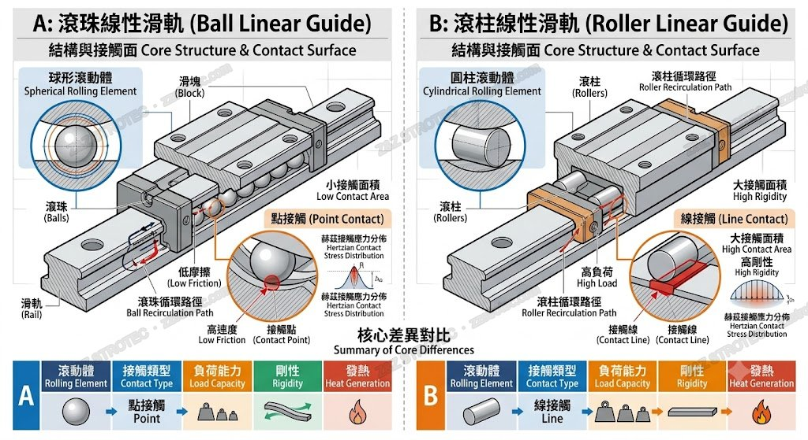
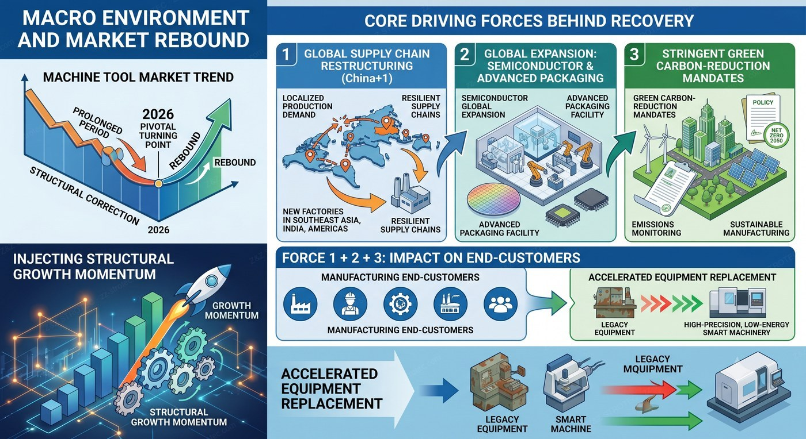
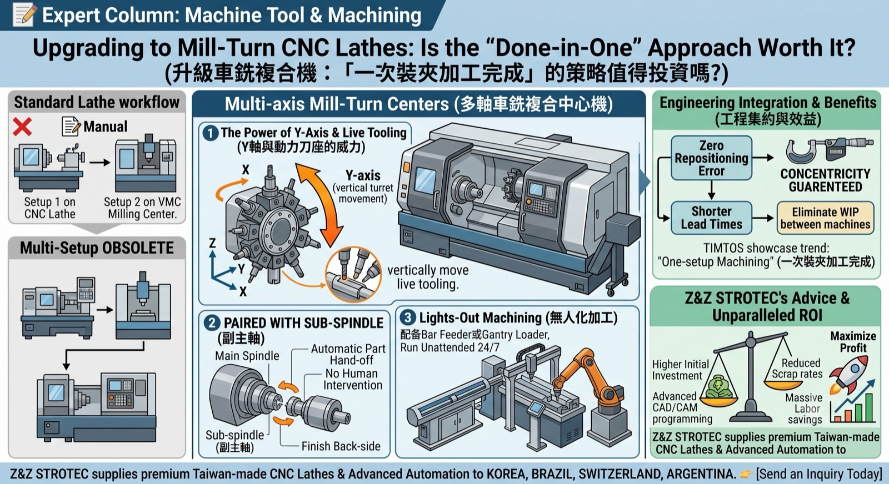
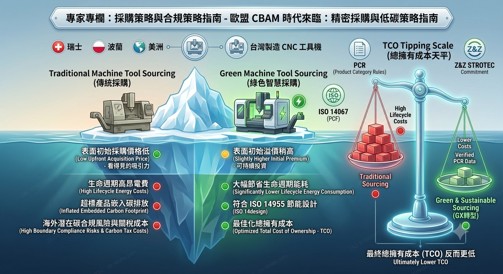
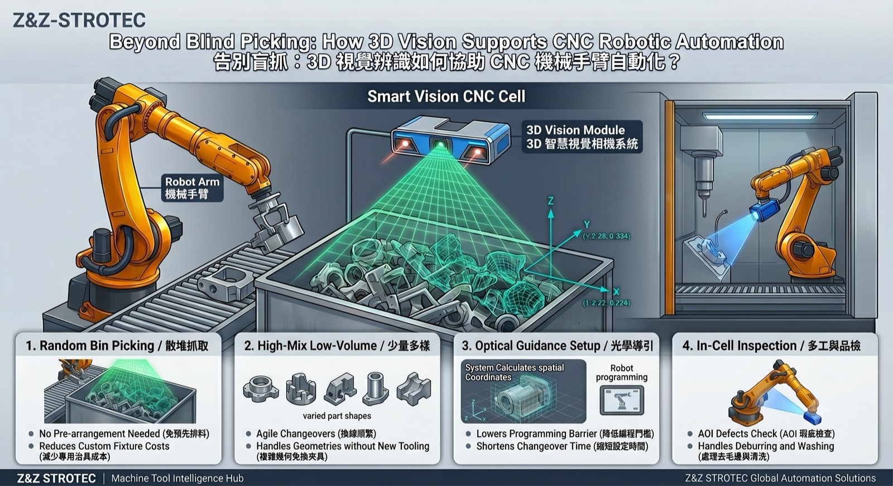
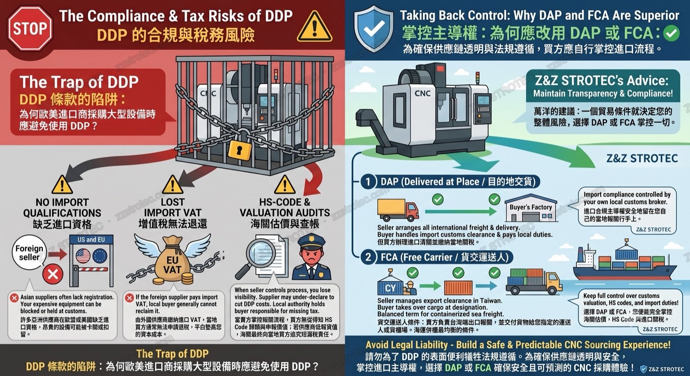

Seller controls shipping; buyer may want own insurance
DAP
Delivered at Place
At named destination
Seller pays all to destination
Door-to-door; buyer handles import duties
DDP
Delivered Duty Paid
At buyer's premises
Seller pays everything incl. import duty
Maximum seller responsibility; rare in machine tools
Next Step
Once your trade term is set, the next step is preparing export documents — Taiwan export document checklist
→
TAIWAN EXPORT — COMMON PRACTICE
Most Common
FOB Taichung / Kaohsiung
Standard term for Taiwan machine tool exports. Seller delivers to port, buyer arranges ocean freight and insurance from there.
Note
FOB vs FCA for Containers
Technically FCA is more accurate for containerized cargo (risk transfers at CFS/CY), but FOB remains widely used in practice by Taiwan exporters.
Marine Insurance
Under FOB — Who Insures?
Under FOB, the buyer is responsible for insurance. The seller may optionally arrange marine insurance as an added service.
Learn More
See how marine insurance works under FOB terms — Marine Insurance
→
EXPERT COLUMN / 專家專欄
Trade · Incoterms 2020
FOB vs. CIF? Choosing the Right Incoterms 2020 for Machine Tool Components Importing
進口工具機零組件：FOB 與 CIF 貿易條件下的風險劃分與防卡關指南
Read Full Article / 閱讀全文 →
Trade · Export Terms
FOB vs. EXW: Which Incoterm Should Overseas CNC Buyers Choose?
FOB vs. EXW：海外 CNC 買家該選哪一個貿易條件？
Read Full Article / 閱讀全文 →
Confused by the terms?
Not sure what a term means? Check the glossary — Terminology →
Need help?
Unsure which trade term fits your shipment? Ask us — Contact / Inquiry →
KEY MARKETS
Z&Z STROTEC exports worldwide — wherever there is no appointed local agent yet, we can supply you directly. The countries below are simply the key markets we have profiled in detail. 🟢 Full Service markets have local sales & after-sales agents; 🔵 Parts Supply markets receive components and spare parts. Don't see your country? Just ask.
🟢 Full Service
🇰🇷 Northeast Asia
South Korea
Major importer of Taiwan CNC machine tools. Strong demand in automotive, aerospace, and precision parts sectors.
🟢 Full Service
🇧🇷 South America
Brazil
⚠️ 2026 Tariff Increase: Brazilian government added ~10% additional duty on CNC machine tool imports — total landed cost now approximately 70–80%+. Port: Santos. Strong automotive & industrial base, high potential but import costs are significant.
🟢 Full Service
🇨🇭 Europe
Switzerland
Precision engineering hub. Low tariffs. High demand for grinding, precision turning. Very high quality standards.
🟢 Full Service
🇦🇷 South America
Argentina
SIMI permit system. Currency controls. Growing retrofit and spare parts market. USD transactions preferred.
SEA's largest auto manufacturing hub. Toyota, Honda, Isuzu presence. BOI duty exemptions available.
🔵 Parts Supply
🇮🇩 Southeast Asia
Indonesia
Largest SEA economy. Making Indonesia 4.0 initiative. Automotive, electronics, mining sectors. Local agent recommended.
🔵 Parts Supply
🇲🇾 Southeast Asia
Malaysia
Semiconductor, E&E, aerospace MRO. English business environment. 0% duty for machine tools. Easy market entry.
🔵 Parts Supply
🇮🇳 South Asia
India
🔥 High Growth Potential | World's 4th largest machine tool consumer. Make in India + PLI schemes. ~28–30% landed cost. Booming demand driven by automotive & aerospace supply chain reshoring.
🔵 Parts Supply
🇵🇱 Eastern Europe
Poland
Central Europe's largest manufacturer. VW, Toyota, Fiat auto clusters. EU market access. CE marking required.
🔵 Parts Supply
🇨🇿 Eastern Europe
Czech Republic
Skoda/VW, Toyota, Hyundai. High precision demand. Among highest per-capita machine tool use in emerging Europe.
🔵 Parts Supply
🇹🇷 Europe / Middle East
Turkey
Bridge market between Europe and Middle East. Booming defense sector. Automotive: Ford, Toyota, Renault. USD/EUR contracts preferred.
🔵 Parts Supply
🇲🇽 North America
Mexico
Nearshoring boom. Top-10 global auto producer. IMMEX duty-free import. Monterrey, Guanajuato industrial clusters.
🔵 Parts Supply
🇨🇴 South America
Colombia
3rd largest South American economy. Oil & gas, metalworking. More stable than Argentina. Growing Medellín tech sector.
🔵 Parts Supply
🇮🇱 Middle East
Israel
High-value defense, aerospace, medical device market. 0% duty. Technical quality over price. Fast decision-making.
Looking for CNC machine tools, precision parts, or bar feeders from Taiwan? Fill in the form below and our team will respond within1–2 business days. We serve customers inKorea, Brazil, Switzerland, Argentinaand worldwide.
ℹ️ Note: For machine tool sales with full installation and after-sales service, we currently serve Korea, Brazil, Switzerland, and Argentina through our local agents.
For other markets, we are happy to supply parts and components and can discuss further options as our relationship develops.
* Required fields. Your information is kept strictly confidential and will only be used to respond to your inquiry.
We do not share your contact details with third parties.
✅
Inquiry Sent Successfully
Thank you! We've received your inquiry and will get back to you within 1–2 business days. Please check your email (including spam folder) for our reply.
EXPERT COLUMN ／ 專家專欄
深度技術分析與實務案例，由 Z&Z STROTEC 專業團隊撰寫。
Trade Terms · Compliance
The Trap of DDP: Why US & EU Importers Should Avoid It When Sourcing CNC Machines
DDP 條款的陷阱：為何歐美進口商採購大型設備時應避免使用 DDP？ ／ DDP의 함정: 미국·EU 수입자가 피해야 하는 이유
Why "all-inclusive" DDP quotes hide compliance traps — supplier import-of-record issues, lost EU VAT, and HS-code under-declaration liability — and why DAP or FCA keep you in control.
→
Smart Automation · Vision-Guided Robotics
Beyond Blind Picking: How 3D Vision Supports CNC Robotic Automation
告別盲抓：3D 視覺辨識如何協助 CNC 機械手臂自動化 ／ 3D 비전 기반 CNC 로봇 자동화
Why vision-guided arms suit high-mix, low-volume work — random bin picking, easier setup, and in-cell AOI — versus the fixture cost of traditional "blind" robots.
→
Sourcing Strategy · CBAM Compliance
Navigating CBAM: How Green Machining Impacts Your Sourcing Strategy
歐盟 CBAM 時代：海外買家的 CNC 精密採購與低碳策略指南 ／ EU CBAM 시대의 저탄소 소싱 전략
What CBAM actually covers, how carbon cost reaches downstream buyers, and the shift from low-cost to low-carbon sourcing — cross-linked to the Green Manufacturing knowledge entry.
→
Process Strategy · Mill-Turn Centers
Upgrading to Mill-Turn CNC Lathes: Is the "Done-in-One" Approach Worth It?
升級車銑複合機：「一次裝夾加工完成」的策略值得投資嗎？ ／ 복합가공기로의 업그레이드
Y-axis, sub-spindles, and the real ROI math behind "done-in-one" — when mill-turn pays off, and when a dedicated lathe still wins.
→
Industry Outlook · Smart Manufacturing
AI Empowerment & Twin-Axis Transformation: Structural Recovery in the 2026 Machine Tool Market
AI 賦能與雙軸轉型：2026 工具機市場的結構性復甦與突圍 ／ AI 역량 강화와 쌍축 전환
Macro drivers of the rebound, the shift from price to value, and the DX × GX twin-axis transformation.
→
Core Components · Linear Guides
Ball vs. Roller Linear Guides: How to Balance Machining Precision and Lifespan
滾珠 vs. 滾柱線性滑軌：如何兼顧加工精度與壽命？ ／ 볼 vs. 롤러 리니어 가이드
Point vs. line contact, rigidity vs. speed, and a practical selection guide by application.
→
Logistics · Sea Freight
Sea Freight Container Guide: How to Choose the Right Container for CNC Machine Tools
海運貨櫃選型指南：進口 CNC 工具機與零組件該選哪種貨櫃？
20GP, 40GP, 40HQ, Open Top, Flat Rack — matching container type to machine weight, height, and CBM.
→
Maintenance · CNC Precision
Linear Guideway Maintenance Guide: Maximize Your CNC Precision
線性滑軌保養週期指南：最大化您的 CNC 加工精度
Lubrication cycles, grease vs. oil selection, and E2 self-lubricating modules — extend guideway life to 10,000+ km.
→
Trade · Export Terms
FOB vs. EXW: Which Incoterm Should Overseas CNC Buyers Choose?
FOB vs. EXW：海外 CNC 買家該選哪一個貿易條件？
Why EXW quotes are a trap for overseas buyers — and why FOB Taichung is the industry standard.
→
Trade · Incoterms 2020
FOB vs. CIF? Choosing the Right Incoterms 2020 for Machine Tool Components Importing
進口工具機零組件：FOB 與 CIF 貿易條件下的風險劃分與防卡關指南
Risk transfer points, insurance gaps, and customs clearance pitfalls — what every procurement manager must know.
→
Automation · Bar Feeding
Eliminating Material Vibration: High-RPM Synchronization Between Bar Feeders and Guide Bushings
消除材料震動：高轉速下送料機與導套的同步調校實務
Hydrodynamic oil film support — preventing bar whipping and surface scarring below 10mm diameter.
→
Tooling · Swiss-Type Lathes
Optimizing Live Tool Holders for Swiss-Type Lathes: Vibration Control in High-Speed Machining
走心式車床高速加工下的「動力刀座」選型與震動抑制指南
Gear backlash, ceramic bearings, dynamic balancing — what determines stability at 6,000+ RPM.
→
More Expert Columns Coming
更多專家專欄陸續刊出。如有刊登合作需求，歡迎。
Tooling · Swiss-Type Lathes
Optimizing Live Tool Holders for Swiss-Type Lathes: Vibration Control in High-Speed Machining
走心式車床高速加工下的「動力刀座」選型與震動抑制指南
When machining high-precision medical bone screws or micro electronic components, engineers operating TSUGAMI, STAR, or Citizen Swiss-type lathes often encounter a critical bottleneck: micro-vibration. When spindle speed ramps up beyond 6,000 RPM for micro-drilling (<3mm), unexpected vibration severely degrades surface roughness (Ra) and dramatically shortens tool life.
Gear-multiplier speeders boost turret drive RPM by 2x to 5x. However, many procurement teams overlook the impact of gear backlash. In high-speed applications, live tools built with ground gears and ceramic bearings can meaningfully suppress micro-vibration and extend tool life compared with standard off-the-shelf components — a worthwhile upgrade to evaluate.
A BMT or VDI interface that fits is only the first requirement. The precision of the drive coupling (polygon, square, or round) determines real-world stability. Every Z&Z STROTEC live tool undergoes dynamic balancing tests before export to guarantee zero eccentric runout at maximum RPM.
Premium live tools for TSUGAMI, Miyano, or STAR lathes. Expert consultation within 1–2 business days.
Automation · Bar Feeding
Eliminating Material Vibration: High-RPM Synchronization Between Bar Feeders and Guide Bushings
消除材料震動：高轉速下送料機與導套的同步調校實務
In Swiss-type sliding headstock machining, micro-diameter bar feeding (<10mm) is notorious for inducing material whipping and surface scarring. When the Bar Feeder and the lathe's Guide Bushing are out of sync at high RPMs, the resulting harmonic vibration ruins clamping stability and accelerates wear on the chucking collet.
Standard feeding channels rely purely on mechanical support, which fails under high-speed conditions above 8,000 RPM. Hydrodynamic oil film support works by creating a pressurized oil cushion around the rotating bar, achieving a significant reduction in axial friction — safeguarding premium raw materials from surface scratches before they even enter the guide bush.
Need premium Guide Bushings, Chucking Collets, or complete Bar Feeder integration? Contact Z&Z STROTEC for consultation.
Trade · Incoterms 2020
FOB vs. CIF? Choosing the Right Incoterms 2020 for Machine Tool Components Importing
進口工具機零組件：FOB 與 CIF 貿易條件下的風險劃分與防卡關指南
공작기계 부품 수입: FOB와 CIF 무역 조건의 위험 분담 및 통관 지연 방지 가이드
Importing high-precision machine tool components — such as live tool holders, spindles, or CNC controllers — involves high value and strict logistical requirements. A superficial understanding of Incoterms 2020 can lead to unexpected costs, damaged goods, or severe delays during customs clearance. This article analyzes the critical risk transition points between FOB and CIF, and provides practical strategies for procurement managers and importers.
라이브 툴 홀더, 스핀들, CNC 컨트롤러 등 고정밀 공작기계 부품 수입은 높은 가치와 엄격한 물류 요건을 수반합니다. 인코텀즈 2020에 대한 피상적인 이해는 예기치 않은 비용 증가, 화물 손상, 심각한 통관 지연으로 이어질 수 있습니다. 본 글은 FOB와 CIF의 위험 이전 핵심 시점을 심층 분석하고 실무 대응 전략을 제시합니다.
⚖️ 1. The Core Dilemma: Control vs. Liability
When sourcing machine tool components globally, purchasing managers often debate between two primary trade terms. While both apply exclusively to sea and inland waterway transport, their risk profiles are vastly different:
FOB (Free on Board): The seller delivers goods on board the vessel nominated by the buyer. Risk transfers from seller to buyer the moment goods are on board. The buyer takes full control of ocean freight and marine insurance.
CIF (Cost, Insurance & Freight): The seller pays for freight and minimum insurance coverage to the destination port. However, risk transfers to the buyer at the loading port — once goods are on board — NOT at the destination.
핵심 딜레마 — 통제권 vs. 책임: 많은 수입업체가 CIF 조건에서 매도인이 운임과 보험료를 지불하므로 해상 운송 중 손상도 매도인 책임이라고 오해합니다. 이는 심각한 착오입니다. 인코텀즈 2020에 따르면 CIF의 위험 이전 시점은 FOB와 동일하게 선적항에서 본선 적재 순간입니다. 해상 사고 시 수입업체가 직접 보험사에 클레임을 제기해야 하며, 매도인은 법적 의무가 없습니다.
Under CIF terms, the seller is only required to obtain minimum coverage — Institute Cargo Clauses (C). For precision machine tool components susceptible to moisture, rust, or electronic damage, Clause C is far from adequate. Buyers must explicitly negotiate for Institute Cargo Clauses (A) — All Risks. Under FOB, the buyer has total freedom to customize the policy for precision parts.
Pain Point 2: Destination Port "Blind Boxes" & Customs Clearance Delays
Under CIF, the seller chooses the carrier. Some opt for low-cost forwarders who charge exorbitant destination fees (Local Charges) upon arrival. If the forwarder fails to provide accurate documentation — e.g., HS Codes for specific CNC parts, Country of Origin certificates — the cargo faces severe customs bottlenecks. FOB grants the buyer full control over the shipping line and forwarder, ensuring transparency and smoother local clearance.
주요 위험 요소: ① 보험 부족 — CIF 조건 매도인은 협회 화물 약관 C(최소 보장)만 취득하면 됩니다. 정밀 부품에는 절대 불충분하며, 협회 화물 약관 A(전위험담보)로 명시 협상해야 합니다. ② 목적항 블랙박스 — 저가 운송 주선인이 과도한 로컬 차지를 청구하거나, HS 코드·원산지 증명서 오류로 통관이 지연될 수 있습니다. FOB 조건에서는 매수인이 운송사를 직접 선택해 투명성을 확보합니다.
💡 3. Strategic Recommendations for Buyers
Factor / 比較項目 / 비교 항목
FOB
CIF
Logistics Control 物流控制 / 물류 통제권
High — Buyer selects carrier & route
Low — Seller controls the vessel
Insurance Control 保險控制 / 보험 통제권
High — Buyer tailors coverage
Low — Seller buys minimum Clause C unless negotiated
Best Suited For 最適合 / 최적 상황
Experienced buyers with forwarder networks & strong bargaining power
New buyers or small-volume orders where seller has better shipping leverage
Expert Tips for Smooth Importing
Clarify specs in the LC/Contract: Ensure technical specifications and packing requirements (vacuum packaging, anti-rust treatment) are legally bound in the contract, regardless of Incoterm chosen.
Audit the HS Codes early: Confirm the seller provides correct Harmonized System codes before the ship sails to prevent customs hold-ups.
Calculate Total Cost of Ownership (TCO): Compare the CIF quote against your FOB cost + self-arranged freight to find where real savings — and real risks — lie.
구매 담당자를 위한 실무 팁: ① LC/계약서에 기술 사양 및 포장 요건(진공 포장, 방청 처리)을 법적으로 명시하세요. ② 선박 출항 전 올바른 HS 코드를 확인해 통관 지연을 방지하세요. ③ CIF 견적과 FOB 비용 + 자체 운임을 비교해 총 소유 비용(TCO)을 기준으로 판단하세요.
Need Incoterms Guidance for Your Next Shipment?
Our team helps importers in Korea, Brazil, Switzerland, and Argentina navigate trade terms, shipping documentation, and customs clearance requirements.
Trade · Export Terms
FOB vs. EXW: Which Incoterm Should Overseas CNC Buyers Choose?
FOB vs. EXW：海外 CNC 買家該選哪一個貿易條件？
FOB vs. EXW: 해외 CNC 구매자가 선택해야 할 무역 조건은?
When sourcing CNC machine tools or precision parts from Taiwan, choosing the right Incoterm is critical. Two of the most commonly discussed terms are EXW (Ex Works) and FOB (Free on Board). But which one actually protects your business?
대만에서 CNC 공작기계나 정밀 부품을 조달할 때 올바른 인코텀즈 선택은 매우 중요합니다. 가장 많이 논의되는 두 조건은 EXW(공장 인도)와 FOB(본선 인도)입니다. 어느 것이 실제로 귀하의 사업을 보호할까요?
⚠️ The Trap of EXW
Many buyers are tempted by EXW because the initial quote looks cheaper. Under EXW, the seller simply makes the goods available at their factory. However, the buyer must handle everything — including local inland transport and Taiwan export customs clearance. For buyers in Switzerland, Brazil, or Argentina, handling export declarations without a local registered entity in Taiwan is extremely risky and can lead to costly delays.
EXW의 함정: 많은 구매자들이 초기 견적이 저렴해 보여 EXW에 끌립니다. EXW 조건에서 매도인은 단순히 공장에서 물품을 제공하기만 합니다. 그러나 매수인이 모든 것을 처리해야 합니다 — 내륙 운송과 대만 수출 통관까지. 대만에 등록 법인이 없는 스위스, 브라질, 아르헨티나 구매자에게 이는 매우 위험하며 큰 비용과 지연을 초래할 수 있습니다.
✅ Why FOB is the Industry Standard
In Taiwan's machine tool export market, FOB Taichung or FOB Kaohsiung is the most practical standard. Under FOB, the seller handles all local transport, port fees, and export customs clearance. The risk and cost only transfer to you once the goods are safely loaded onto the vessel — a clear division of responsibility that prevents unexpected port charges and compliance issues.
FOB가 업계 표준인 이유: 대만 공작기계 수출 시장에서 FOB 타이중 또는 FOB 가오슝이 가장 실용적인 표준입니다. FOB 조건에서 매도인이 모든 내륙 운송, 항만 비용, 수출 통관을 처리합니다. 위험과 비용은 물품이 선박에 안전하게 적재된 후에야 귀하에게 이전됩니다. 이러한 명확한 책임 분담이 예상치 못한 항만 비용과 규정 준수 문제를 방지합니다.
💡 Z&Z STROTEC's Recommendation
For international buyers, we strongly recommend avoiding EXW. Choose FOB (or FCA for containerized sea freight / air freight) to ensure a smooth, compliant, and predictable supply chain. Our team handles all export documentation, customs clearance, and port coordination on your behalf — so you receive the goods without complications.
Z&Z STROTEC의 권고사항: 해외 구매자에게 EXW를 피하시기를 강력히 권장합니다. FOB(또는 컨테이너 해상/항공 화물의 경우 FCA)를 선택하여 원활하고 규정을 준수하며 예측 가능한 공급망을 확보하세요. 당사 팀이 모든 수출 서류, 통관 및 항만 조율을 대신 처리해 드립니다.
Need Hassle-Free Export Support from Taiwan?
We serve buyers in Korea, Brazil, Switzerland, and Argentina with full export procedures — FOB with complete documentation, every time.
Maintenance · CNC Precision
Linear Guideway Maintenance Guide: Maximize Your CNC Precision
線性滑軌保養週期指南：最大化您的 CNC 加工精度
선형 가이드웨이 유지보수 가이드: CNC 정밀도 최대화
Linear guideways are the backbone of any CNC machine's accuracy. Whether you are running a high-speed machining center or a heavy-duty CNC lathe, proper maintenance prevents premature wear and maintains micrometer-level positioning over thousands of operating hours.
선형 가이드웨이는 모든 CNC 기계 정밀도의 핵심입니다. 고속 머시닝 센터든 중가공 CNC 선반이든, 올바른 유지보수는 조기 마모를 방지하고 마이크로미터 수준의 위치 결정 정밀도를 유지합니다.
🕐 When to Lubricate
Lack of lubrication increases friction and drastically shortens the lifespan of the guideway. As a general industry standard, check and replenish lubricant every 100 km of travel distance, or every 3–6 months. If your machine operates in highly contaminated environments (woodworking, composites, or casting dust), shorten this cycle accordingly.
윤활 주기: 윤활 부족은 마찰을 증가시키고 가이드웨이 수명을 크게 단축시킵니다. 일반 업계 표준으로, 이동 거리 100km마다 또는 3~6개월마다 윤활제를 점검하고 보충해야 합니다. 목재 가공, 복합재, 주조 분진 등 오염이 심한 환경에서는 주기를 단축하세요.
🔬 Choosing the Right Lubricant
Grease (潤滑脂 / 그리스)
Use a high-quality lithium-based grease for standard operations below 60 m/min. When injecting grease, always pump until fresh grease purges out from the bearing seals — this confirms old contaminants have been fully flushed out.
Oil (潤滑油 / 윤활유)
For high-speed applications, use lubricating oil with a viscosity of 32–150 cSt. Ensure the automatic oiler supplies approximately 0.3 cm³/hr depending on your load conditions.
올바른 윤활제 선택: ①그리스 — 60m/min 이하 표준 작업에는 고품질 리튬 기반 그리스 사용. 베어링 씰에서 신선한 그리스가 나올 때까지 펌핑하여 오염물을 완전히 제거. ②윤활유 — 고속 응용에는 점도 32~150 cSt의 윤활유 사용, 자동 오일러가 시간당 약 0.3 cm³를 공급하는지 확인.
⚙️ Upgrade to Self-Lubricating Technology
Tired of frequent maintenance intervals? Z&Z STROTEC supplies advanced linear guides equipped with E2 self-lubricating modules. These systems create an eco-friendly oil film around the carriage, extending your maintenance-free period to over 10,000 km of travel — a proven solution for round-the-clock automated production lines.
자기윤활 기술로 업그레이드: 잦은 유지보수에 지치셨나요? Z&Z STROTEC은 E2 자기윤활 모듈이 장착된 고급 선형 가이드를 공급합니다. 이 시스템은 친환경 오일 필름을 제공하여 무보수 기간을 10,000km 이상으로 연장합니다 — 24시간 자동화 생산 라인에 최적화된 솔루션입니다.
Looking for High-Precision Linear Guideways or Replacement Parts?
We supply premium linear guideways compatible with major CNC brands, with fast shipping to Korea, Brazil, Switzerland, and Argentina.
Logistics · Sea Freight
Sea Freight Container Guide: How to Choose the Right Container for CNC Machine Tools
海運貨櫃選型指南：進口 CNC 工具機與零組件該選哪種貨櫃？
해상 운송 컨테이너 가이드: CNC 공작기계에 맞는 컨테이너 선택법
When importing CNC machine tools or precision parts from Taiwan to markets like Switzerland, Brazil, or Korea, choosing the right sea freight container is crucial. The right choice not only protects your high-value equipment but also optimizes your shipping costs. Here is a practical guide to the standard container types used in machine tool logistics.
대만에서 스위스, 브라질, 한국 등으로 CNC 공작기계나 정밀 부품을 수입할 때, 올바른 해상 컨테이너 선택은 매우 중요합니다. 올바른 선택은 고가 장비를 보호할 뿐 아니라 운송 비용도 최적화합니다. 다음은 공작기계 물류에 사용되는 표준 컨테이너 유형에 대한 실무 가이드입니다.
📦 1. General Purpose — 20GP & 40GP (標準乾櫃)
The standard dry container is the workhorse of machine tool shipping. The 20GP offers around 33 CBM and a max payload of approximately 24,000 kg — ideal for heavy, dense components like linear guideways, ball screws, and servo motors, and it comfortably holds about 10–11 standard Euro pallets. The 40GP offers around 67.7 CBM, making it the best choice for medium-sized machines or large bulk orders of tool holders and bar feeders.
일반 컨테이너: 표준 드라이 컨테이너는 공작기계 운송의 핵심입니다. 20GP는 약 33 CBM 용적과 최대 약 24,000 kg 적재량을 제공하여 리니어 가이드, 볼스크류, 서보 모터 등 고밀도 중량 부품에 최적이며, 표준 유로 팔레트 약 10~11개를 수용합니다. 40GP는 약 67.7 CBM를 제공하여 중형 기계나 툴홀더·바피더 대량 주문에 가장 적합합니다.
🔝 2. High Cube — 40HQ (高櫃)
Providing an extra 30 cm of height (internal height approx. 2.69 m), the 40HQ is perfect for taller standard CNC machines. With around 76.4 CBM of space, it is the most commonly used container when you need maximum volume without exceeding weight limits.
하이큐브: 40HQ 하이큐브는 높이가 약 30 cm 더 높아(내부 높이 약 2.69 m) 키가 큰 표준 CNC 기계에 적합합니다. 약 76.4 CBM 공간으로, 중량 한도를 초과하지 않으면서 최대 부피가 필요할 때 가장 많이 사용됩니다.
🏗️ 3. Open Top — OT (開頂貨櫃)
For oversized CNC machining centers that cannot be loaded through standard doors, Open Top containers are the go-to solution. They lack a solid fixed roof, allowing an overhead crane to safely lower heavy equipment directly into the container from above before it is covered with a waterproof tarpaulin.
오픈탑: 표준 문으로 적재할 수 없는 대형 CNC 머시닝 센터에는 오픈탑 컨테이너가 해답입니다. 고정 지붕이 없어 천장 크레인으로 중장비를 위에서 안전하게 내려 적재한 뒤 방수 천막으로 덮습니다.
🛠️ 4. Flat Rack — FR (平板貨櫃)
If you are importing massive, over-width, or over-height industrial equipment, Flat Racks are required. With no side walls or roof, they provide maximum flexibility for irregular dimensions.
플랫랙: 초대형, 초과 폭, 초과 높이 산업 설비를 수입한다면 플랫랙이 필요합니다. 측벽과 지붕이 없어 비정형 치수에 최대한의 유연성을 제공합니다.
💡 Pro Tip for Buyers
Always ensure your supplier properly calculates the CBM and weight distribution. Proper lashing, structural fixing, and moisture-proof packaging (such as vacuum foil) inside the container are just as important as the container itself — they prevent rust and damage during ocean transit.
바이어를 위한 팁: 공급업체가 CBM과 무게 분포를 정확히 계산하는지 반드시 확인하세요. 컨테이너 내부의 적절한 래싱(고정), 구조 보강, 방습 포장(진공 포일 등)은 컨테이너 선택만큼 중요하며, 해상 운송 중 녹과 손상을 방지합니다.
Need a Reliable CNC Supplier with Expert Export Logistics?
At Z&Z STROTEC, we provide professional packaging, container loading, and FOB/FCA export services for global buyers — with fast shipping to Korea, Brazil, Switzerland, and Argentina.
Core Components · Linear Guides
Ball vs. Roller Linear Guides: How to Balance Machining Precision and Lifespan
滾珠 vs. 滾柱線性滑軌，如何選擇才能兼顧加工精度與壽命？
볼 vs. 롤러 리니어 가이드웨이, 가공 정밀도와 수명을 모두 잡는 선택 기준은?
Within the 60-kilometer "Golden Valley" cluster along Dadu Mountain in central Taiwan, the machine tool and component industry demonstrates strong vertical integration and customization capability. Among the critical motion components in precision machinery, the linear guide bears the load and guides axis movement. Whether in a turn-mill multitasking machine or a 5-axis machining center, balancing high-precision machining against a long service life often comes down to a single choice: ball or roller guides.
대만 대두산(大肚山)을 따라 형성된 60km의 '황금 계곡' 클러스터에서 대만 공작기계 및 부품 산업은 강력한 수직 계열화와 맞춤형 제작 능력을 보여줍니다. 정밀 기계의 핵심 구동 부품 중 리니어 가이드웨이(Linear Guide)는 하중을 지탱하고 운동을 안내하는 핵심 역할을 합니다. 복합 턴밀 가공기이든 5축 가공 센터이든, 고정밀 가공과 장기 수명 사이에서 균형을 잡는 핵심은 결국 '볼(Ball)'과 '롤러(Roller)' 중 무엇을 선택하느냐에 달려 있습니다.
⚙️ Structural & Contact-Interface Differences

Core structure & contact surface — ball (point contact) vs. roller (line contact). ／ 結構與接觸面之核心差異 ／ 구조 및 접촉면의 핵심 차이
The most fundamental difference lies in the geometry of the rolling element, which determines how it meets the rail. Ball guides use spherical elements that make point contact with the rail and block; the small contact area gives very low rolling friction, enabling high speed and smooth motion. Roller guides use cylindrical elements that make line contact; under load the contact spreads from a point to a line, distributing the load more evenly.
한국어: 가장 본질적인 차이는 전동체의 기하학적 형상에 있으며, 이는 레일과의 접촉 방식을 결정합니다. 볼 가이드는 구형 전동체로 레일 및 블록과 점 접촉(Point Contact)을 하며, 접촉 면적이 작아 굴림 마찰 저항이 매우 낮고 구동이 빠르고 부드럽습니다. 롤러 가이드는 원통형 전동체로 선 접촉(Line Contact)을 하며, 외력을 받으면 접촉면이 점에서 선으로 확장되어 하중을 균일하게 분산시킵니다.
📊 Performance Comparison
Precision & rigidity: Roller guides have a clear edge. Under heavy cutting loads, line contact keeps a roller's elastic deformation to a fraction of a ball's. Higher rigidity means better vibration damping, which suppresses cutting resonance and improves surface finish and geometric accuracy.
Speed & smoothness: With lower friction and less heat, ball guides reach higher top speed and acceleration — ideal for light-load or high-speed machines that rapid-traverse frequently.
Service life: For the same mounting size, roller guides carry a much higher basic dynamic load rating. Under heavy or repeated shock loads their fatigue life is more stable and they are less prone to early flaking.
한국어:가공 정밀도·강성 — 롤러 가이드가 우위. 선 접촉 덕분에 중절삭 시 롤러의 탄성 변형량은 볼의 수분의 일에 불과하며, 높은 강성은 방진 능력을 높여 절삭 공진을 억제하고 표면 거칠기와 기하 정밀도를 개선합니다. 속도·부드러움 — 볼 가이드는 마찰과 발열이 적어 최고 속도·가속도가 우수하며, 빠른 이송(Rapid Traverse)이 잦은 경하중·고속 장비에 적합합니다. 수명 — 동일 설치 크기에서 롤러의 기본 동정격 하중이 훨씬 높아, 고하중·연속 충격 조건에서 피로 수명이 안정적이고 조기 박리가 적습니다.
🔮 Smart Upgrade Trends
As demand for digital transformation (DX) and predictive maintenance grows, linear guides are moving beyond purely mechanical parts. Research institutes and leading makers are embedding sensors into the runner block to build smart linear guides. With miniature sensors and supporting algorithms, the system can estimate rail parallelism and monitor preload loss in real time — flagging early signs of wear, insufficient lubrication, or loss of rigidity before they cause unplanned downtime, helping hold machining precision over the long run.
中文： 隨著智慧製造（DX）與預測性維護需求增加，線性滑軌已逐步超越單純機械元件的範疇。研究機構與先進業者正將感測器整合至滑座中，開發智慧線性滑軌（Smart Linear Guide）。透過微型感測器與演算法，系統能即時進行滑軌平行度狀態估測與預壓損耗監測，在磨損、潤滑不足或剛性下降的初期即發出預警，避免無預警停機，維持長期加工精度的穩定。
한국어: 디지털 전환(DX)과 예지보전 수요가 늘면서 리니어 가이드는 단순 기계 부품의 영역을 넘어서고 있습니다. 연구기관과 선도 기업은 블록 내부에 센서를 통합해 스마트 리니어 가이드를 개발하고 있습니다. 미세 센서와 알고리즘으로 시스템은 가이드 평행도 상태 추정과 예압 감쇠 모니터링을 실시간 수행하여, 마모·윤활 부족·강성 저하의 초기 징후를 미리 경고해 비계획 정지를 방지하고 장기 가공 정밀도를 안정적으로 유지합니다.
🎯 Practical Selection Guide
Choose ball linear guides when:
Semiconductor process equipment and electronic component packaging machines
High-speed light-cutting engravers and high-speed drilling / tapping centers
Automation and robotic arms needing high dynamic response and frequent rapid positioning
Choose roller linear guides when:
Large gantry mills and high-end horizontal turn-mill multitasking centers
Aerospace and defense parts in difficult-to-cut materials (titanium, nickel-based alloys)
Heavy-duty hard milling, such as mold and die steel
Smart-factory lines aiming for high OEE, high reliability, and long equipment amortization cycles
한국어:'볼' 선택이 적합한 경우 — 반도체 제조 장비 및 전자부품 패키징 장비; 고속 경절삭 조각기, 고속 태핑 센터; 높은 동적 응답성과 빠른 위치 결정이 필요한 자동화·로봇 암. '롤러' 선택이 적합한 경우 — 대형 갠트리 밀링기, 하이엔드 수평형 턴밀 복합기; 난삭재(타이타늄·니켈계 합금) 항공우주·방산 부품 가공; 금형강 등 중하중 하드 밀링; 높은 가동률(OEE)·신뢰성과 긴 감가상각 주기를 지향하는 스마트 팩토리 라인.
Not Sure Which Guide Fits Your Machine?
Z&Z STROTEC supplies THK, HIWIN, and equivalent ball and roller linear guides — specified by preload, accuracy class, and load. Tell us your application and we'll help you match the right type.
Industry Outlook · Smart Manufacturing
AI Empowerment and Twin-Axis Transformation: Structural Recovery in the 2026 Machine Tool Market
AI 賦能與雙軸轉型：2026 工具機市場的結構性復甦與突圍
AI 역량 강화와 쌍축(Twin-Axis) 전환: 2026년 공작기계 시장의 구조적 회복과 돌파구
After years of structural correction, the global machine tool market is turning a corner in 2026. For Taiwan's builders, the way forward runs along two axes — digital (DX) and green (GX) — and a shift from price competition toward value. This column maps the macro drivers behind the rebound and the transformation strategy they demand.
수년간의 구조적 조정을 거쳐 글로벌 공작기계 시장은 2026년 변곡점을 맞이합니다. 대만 제조업체의 돌파구는 디지털(DX)과 그린(GX)이라는 두 축, 그리고 가격 경쟁에서 가치 발전으로의 전환에 있습니다. 본 칼럼은 이번 회복을 이끄는 대환경 동력과 그에 따른 전환 전략을 정리합니다.
🌐 Macro Environment & Market Rebound

Three driving forces behind the rebound: China+1 supply-chain restructuring, semiconductor & advanced-packaging expansion, and green carbon-reduction mandates. ／ 推動復甦的三股動能 ／ 회복을 이끄는 세 가지 동력
Following a prolonged structural correction, the global machine tool industry reached a pivotal turning point for rebound in 2026. The core drivers are the localized production demand from supply-chain restructuring (China+1), the global expansion of the semiconductor and advanced-packaging sectors, and increasingly stringent green carbon-reduction mandates. Together they are pushing end-customers to replace legacy equipment with high-precision, low-energy smart machinery — injecting structural growth momentum into the market.
한국어: 장기적인 구조적 조정을 거친 글로벌 공작기계 산업은 2026년 경기 반전의 핵심 변곡점을 맞이했습니다. 핵심 동력은 글로벌 공급망 재편(China+1)에 따른 현지화 생산 수요, 반도체·첨단 패키징 산업의 글로벌 설비 증설, 그리고 날로 엄격해지는 탄소 배출 감축 압력에서 비롯됩니다. 이 세 가지 힘은 최종 소비자가 구형 장비를 고정밀·저소비 전력 스마트 장비로 교체하도록 가속화하며 시장에 구조적 성장 동력을 불어넣고 있습니다.
💡 From Price Competition to Value Evolution
Caught between geopolitical risk and overseas low-price strategies, Taiwan's machine tool industry can no longer break through on price-to-performance alone. The core of the shift is moving from price competition to value evolution. Modular design of critical components lets makers shorten R&D and lead times and pursue deep customization for high-value sectors — aerospace, medical, and new energy. Embedding sensors and algorithms into core components to raise hardware flexibility and value-add is the only way to avoid a homogenized price war.
한국어: 지정학적 리스크와 해외 저가 공세 사이에서 대만 공작기계 산업은 더 이상 가성비만으로 시장을 돌파할 수 없습니다. 전환의 핵심은 '가격 경쟁에서 가치 발전으로의 선회'입니다. 핵심 부품의 모듈화 설계(Modular Design)를 통해 연구개발·납기를 단축하고 항공우주·의료·신재생 에너지 등 고부가가치 분야의 심층 맞춤형 제작을 수행할 수 있습니다. 아울러 센서와 알고리즘을 핵심 부품에 융합해 하드웨어 유연성과 부가가치를 높이는 것만이 동질화된 저가 경쟁을 피하는 유일한 길입니다.
Today's machine tool technology advances along two axes — Digital Transformation (DX) and Green Transformation (GX):
當前工具機技術的演進，主要圍繞在數位轉型（DX）與綠色轉型（GX）的雙軸軌道上：
현재 공작기계 기술의 진화는 디지털 전환(DX)과 그린 전환(GX)이라는 쌍축 궤도를 중심으로 전개됩니다.
🤖 DX — Digital Transformation
The clearest expression is the integration of AI controllers. Domestic leaders across machine-tool building and controller development — for example Goodway (程泰) and Syntec (新代) — are advancing AI robotics and machining-path optimization. Combined with the Industrial IoT (OT/IT integration), modern machines now support smart collision avoidance and dynamic Prognostics and Health Management (PHM), giving the production process digital-twin capabilities that are visualized, predictable, and optimizable.
中文： 最明顯的體現是 AI 控制器的整合。國內工具機與控制器領導廠商（如程泰 Goodway、新代 Syntec）正積極投入 AI 機器人與加工路徑最佳化的布局。結合機聯網（OT/IT 整合），現代機台已能實現智慧防撞（Collision Avoidance）與動態設備健康診斷（PHM），讓生產流程具備「可視化、可預測、可優化」的數位孿生能力。
한국어: 가장 뚜렷한 표현은 AI 컨트롤러의 통합입니다. 공작기계 제조와 컨트롤러 개발 분야의 대만 선도 기업(예: 성태 Goodway, 신대 Syntec)이 AI 로봇공학 및 가공 경로 최적화를 추진하고 있습니다. 머신 IoT(OT/IT 통합)와 결합해 현대식 장비는 지능형 충돌 방지와 동적 설비 건강 진단(PHM)을 실현하며, 생산 공정에 '가시화·예측·최적화'된 디지털 트윈 역량을 부여합니다.
🌱 GX — Green Transformation
In response to global net-zero trends, makers are implementing carbon-emission monitoring aligned with ISO 14067 and Product Category Rules (PCR). On the hardware side, smart ECO energy-saving modes automatically regulate consumption during idle or light-load periods. Certification such as the Green Machinery initiative promoted by TAMI (Taiwan Association of Machinery Industry) provides credible low-carbon data for exports to Europe and the US — turning carbon-tax pressure into a green opportunity.
中文： 因應全球淨零碳排趨勢，廠商導入符合 ISO 14067 及產品類別規則（PCR）的碳排監測系統。硬體上開發智慧 ECO 節能模式，在機台閒置或輕負載時自動調控能耗。此外，透過台灣機械公會（TAMI）推動的綠色機械認證，為出口歐美的產品提供具公信力的低碳數據證明，化碳稅危機為綠色商機。
한국어: 글로벌 넷제로 트렌드에 맞추어 제조업체들은 ISO 14067 및 제품군별 규칙(PCR)을 준수하는 탄소 배출 모니터링 시스템을 도입하고 있습니다. 하드웨어 측면에서는 스마트 ECO 에너지 절약 모드로 대기·경하중 시 에너지 소비를 자동 조절합니다. 또한 대만기계공업동업공회(TAMI)가 추진하는 그린 기계 인증을 통해 유럽·미국 수출 제품에 공신력 있는 저탄소 데이터를 제공하여 탄소세 압력을 녹색 기회로 전환합니다.
🎯 Conclusion / 結語 / 맺음말
Navigating an increasingly complex trade landscape beyond 2026, Taiwan's machine tool builders must move past the mindset of being standalone hardware manufacturers. Future competitiveness rests less on mechanical rigidity alone and more on the depth of software-hardware integration. Through cross-industry alliances spanning builders, controller makers, system integrators (SIs), and research institutes, AI, IIoT, and low-carbon technologies should become standard features. Only by accelerating the move toward a Smart Manufacturing Solution Provider can the industry secure its core competitiveness for the next decade.
한국어: 2026년 이후 더욱 복잡해지는 글로벌 무역 정세 속에서, 대만 공작기계 업체들은 '단품 장비 제조업체'라는 프레임에서 벗어나야 합니다. 미래 경쟁력은 기계 구조의 강성만이 아니라 소프트웨어·하드웨어 통합의 깊이에 의해 결정됩니다. 공작기계 제조사·컨트롤러 제조사·시스템 통합업체(SI)·연구 기관 간의 이종 협력을 통해 AI, 스마트 네트워킹, 녹색 저탄소 기술을 표준 사양으로 내재화해야 합니다. '스마트 제조 솔루션 제공업체'로의 전환을 가속화할 때 비로소 향후 10년의 핵심 경쟁력을 다질 수 있습니다.
Sourcing Smart, Low-Carbon CNC Machinery?
Z&Z STROTEC connects global buyers with Taiwan's smart-manufacturing supply chain — AI-ready machines, energy-efficient builds, and the components behind them. Tell us your application and target market.
Process Strategy · Mill-Turn Centers
Upgrading to Mill-Turn CNC Lathes: Is the "Done-in-One" Approach Worth It?
升級車銑複合機：「一次裝夾加工完成」的策略值得投資嗎？
복합가공기(Mill-Turn)로의 업그레이드: '원셋업(Done-in-One)' 전략은 투자할 가치가 있는가?
For decades, precision manufacturing followed a multi-step routine: turn a part on a CNC lathe, then move it to a vertical machining center (VMC) for milling, drilling, and tapping. Rising labor costs and tighter tolerance demands are making this multi-setup workflow harder to justify. Multi-axis mill-turn centers (多軸車銑複合中心機) consolidate these operations into a single machine — but the higher capital cost and programming complexity mean the upgrade deserves a careful look.
수십 년간 정밀 가공은 다단계 공정을 따랐습니다. CNC 선반에서 선삭한 뒤, 공작물을 머시닝 센터(VMC)로 옮겨 밀링·드릴링·태핑을 수행하는 방식입니다. 인건비 상승과 더 엄격한 공차 요구로 이러한 '복수 셋업' 방식은 점점 정당화하기 어려워지고 있습니다. 다축 복합가공기(Mill-Turn)는 이 공정들을 단일 기계로 통합합니다 — 다만 높은 초기 투자와 프로그래밍 복잡도 때문에 이 업그레이드는 신중한 검토가 필요합니다.
⚙️ The Power of the Y-Axis and Sub-Spindle

Mill-turn center: a Y-axis turret and sub-spindle enable done-in-one machining. ／ 車銑複合機：Y 軸刀塔＋副主軸實現一次裝夾加工完成 ／ 복합가공기: Y축 터렛＋보조 주축으로 원셋업 가공 실현
A standard CNC lathe moves only in the X and Z axes. Adding a Y-axis lets the turret move vertically, so live tooling (動力刀座) can perform off-center milling, cross-drilling, and keyway cutting that purely rotational turning cannot. Paired with a sub-spindle (副主軸), the main spindle can hand the part directly to a second spindle, so back-side machining is completed without an operator re-clamping the workpiece.
中文： 一般 CNC 車床僅有 X、Z 兩軸。加裝 Y 軸後，刀塔可上下移動，讓動力刀座得以進行偏心銑削、橫向鑽孔與鍵槽加工——這是純旋轉式車削無法達成的。再搭配副主軸（副主軸），主軸便能將工件直接交遞給第二主軸，使背面加工得以在無人工重新夾持的情況下完成。
한국어: 일반 CNC 선반은 X·Z 두 축만 움직입니다. Y축을 추가하면 터렛이 상하로 이동하여, 동력 공구대(動力刀座)로 편심 밀링·교차 드릴링·키홈 가공 등 순수 선삭으로는 불가능한 작업을 수행할 수 있습니다. 보조 주축(副主軸)과 결합하면 주축이 공작물을 제2 주축으로 직접 전달하여, 작업자의 재클램핑 없이 배면 가공을 완료할 수 있습니다.
🎯 Engineering Integration: Three Measurable Gains
At recent industry showcases such as TIMTOS, machines built around "one-setup machining" (一次裝夾加工完成) have clearly moved to the center of the market. The appeal rests on three measurable gains:
Zero repositioning error: every time a part is unclamped and moved to another machine, concentricity (同心度) is lost. Completing all features in one setup holds tolerances that would otherwise drift between machines.
Shorter lead times: removing the work-in-progress (WIP) that queues between machines compresses overall throughput time.
Lights-out machining: paired with a bar feeder or gantry loader, a mill-turn lathe can run unattended around the clock.
한국어: TIMTOS 등 최근 주요 전시회에서 '원셋업 가공(一次裝夾加工完成)'을 중심으로 설계된 기계가 시장의 중심으로 자리 잡았습니다. 그 매력은 세 가지 정량적 효익에 있습니다: ① 재위치 오차 제로 — 공작물을 분리해 다른 기계로 옮길 때마다 동심도(同心度)가 손실되며, 단일 셋업에서 모든 형상을 완성하면 기계 간에 벌어질 공차를 잡아둘 수 있습니다; ② 리드타임 단축 — 기계 사이에 대기하는 재공품(WIP)을 없애 전체 처리 시간을 압축합니다; ③ 무인 가공 — 바피더나 갠트리 로더와 결합하면 복합가공기는 24시간 무인 운전이 가능합니다.
💡 Z&Z STROTEC's View / 觀點 / 관점
A mill-turn machine does require a higher initial investment and more advanced CAD/CAM programming. But eliminating secondary fixtures, lowering scrap rates, and cutting labor can deliver a return that a separate lathe-plus-VMC line struggles to match — provided your part mix has enough complexity and volume to keep the machine loaded. For simple, single-operation parts, a dedicated lathe may still be the more economical choice.
한국어: 복합가공기는 분명 더 높은 초기 투자와 더 높은 수준의 CAD/CAM 프로그래밍 역량을 요구합니다. 그러나 2차 지그 제거, 불량률 감소, 인건비 절감이 가져오는 회수는 '선반＋VMC' 분리 라인이 따라가기 어려운 경우가 많습니다 — 다만 제품 구성이 기계를 충분히 가동시킬 만한 복잡도와 물량을 갖추었을 때의 이야기입니다. 공정이 단순한 부품이라면 전용 선반이 여전히 더 경제적인 선택일 수 있습니다.
Evaluating a Mill-Turn Upgrade?
Z&Z STROTEC supplies premium Taiwan-made CNC lathes and automation components to Korea, Brazil, Switzerland, and Argentina. Share your part drawings and volumes, and we'll help you weigh mill-turn against a conventional line.
Sourcing Strategy · CBAM Compliance
Navigating CBAM: How Green Machining Impacts Your Sourcing Strategy
歐盟 CBAM 時代：海外買家的 CNC 精密採購與低碳策略指南
EU CBAM 시대: 해외 바이어를 위한 정밀 CNC 소싱·저탄소 전략 가이드
Carbon is moving from an environmental metric to a line item in sourcing decisions. With the EU's Carbon Border Adjustment Mechanism (CBAM) entering its definitive phase in 2026 — and similar measures under discussion elsewhere, such as the proposed US Clean Competition Act — importers increasingly need to understand the carbon embedded in their supply chains. For buyers of CNC machinery and precision components, this reshapes how sourcing decisions are made.
탄소는 환경 지표에서 소싱 결정의 비용 항목으로 바뀌고 있습니다. EU 탄소국경조정제도(CBAM)가 2026년 본격 시행 단계에 들어섰고, 미국의 발의된 청정경쟁법(CCA) 등 유사한 조치도 논의되고 있어, 수입업체는 공급망에 내재된 탄소를 점점 더 파악해야 합니다. CNC 기계 및 정밀 부품 바이어에게 이는 소싱 결정 방식 자체를 바꾸고 있습니다.

Traditional vs. green CNC sourcing — the hidden lifecycle costs below the waterline, and why total cost of ownership can favour the low-carbon path. ／ 傳統 vs. 綠色 CNC 採購：水面下的隱形生命週期成本，以及為何總持有成本反而傾向低碳路徑。 ／ 전통 vs. 친환경 CNC 소싱: 수면 아래 숨은 전과정 비용.
⚖️ What CBAM actually covers — and how the cost reaches you
In its current scope, CBAM applies to carbon-intensive basic materials: iron and steel, aluminium, cement, fertilizers, hydrogen and electricity. Finished CNC machines and most precision components are not directly levied today. The cost still reaches downstream buyers in three ways: (1) the steel and aluminium inputs in your parts are covered; (2) the EU is reviewing an expansion of scope to more downstream goods; and (3) customers and tier-1 partners increasingly require verifiable carbon data regardless of legal scope. A supply chain built on energy-hungry legacy CNC equipment carries higher Scope 2 (electricity) emissions per part — and therefore higher carbon exposure as these pressures tighten.
한국어: 현재 범위에서 CBAM은 탄소집약적 기초 소재 — 철강, 알루미늄, 시멘트, 비료, 수소, 전력 — 에 적용됩니다. 완성된 CNC 기계와 대부분의 정밀 부품은 현재 직접 부과 대상이 아닙니다. 그래도 비용은 세 가지 경로로 하류 바이어에게 전달됩니다: (1) 부품에 들어가는 철강·알루미늄 소재 자체가 대상이고, (2) EU는 범위를 더 많은 하류 제품으로 확대하는 방안을 검토 중이며, (3) 법적 범위와 무관하게 고객과 1차 협력사가 검증 가능한 탄소 데이터를 점점 더 요구합니다. 에너지를 많이 쓰는 구형 CNC 장비에 의존하는 공급망은 부품당 Scope 2(전력) 배출이 높아 탄소 노출도 커집니다.
🎯 From low-cost sourcing to low-carbon sourcing
For buyers in Switzerland, Poland and the Americas, the practical shift is from "lowest unit price" to "lowest total carbon and cost." Two priorities stand out. First, ask for verifiable carbon data — partners able to provide product carbon footprint data aligned with ISO 14067 and the relevant Product Category Rules (PCR). Second, favour high-efficiency equipment — machines with thermal compensation, variable-frequency hydraulics and low-friction transmission components reduce power consumption per part, lowering both Total Cost of Ownership (TCO) and embedded-carbon exposure.
中文： 對瑞士、波蘭與美洲的買家而言，務實的轉變是從「最低單價」走向「最低總碳排與總成本」。兩個重點：其一，要求可驗證的碳數據——選擇能提供對接 ISO 14067 與相關產品類別規則（PCR）之碳足跡數據的夥伴；其二，優先採用高效率設備——具備熱補償、變頻油壓與低摩擦傳動元件的機台，可降低每件產品的耗電，同時壓低總持有成本（TCO）與嵌入碳風險。
한국어: 스위스, 폴란드, 미주의 바이어에게 현실적인 전환은 "최저 단가"에서 "최저 총 탄소·총비용"으로 옮겨가는 것입니다. 두 가지가 핵심입니다. 첫째, 검증 가능한 탄소 데이터를 요구하십시오 — ISO 14067 및 관련 제품군 규칙(PCR)에 부합하는 제품 탄소발자국 데이터를 제공할 수 있는 파트너를 선택합니다. 둘째, 고효율 장비를 우선하십시오 — 열보정, 가변주파수 유압, 저마찰 전동 부품을 갖춘 기계는 부품당 소비 전력을 줄여 총소유비용(TCO)과 내재 탄소 노출을 함께 낮춥니다.
🌐 Z&Z STROTEC's role
We supply precision CNC components and source high-efficiency machine tools designed around recognised eco-design principles such as ISO 14955. By improving cooling paths and mechanical efficiency, we help buyers reduce energy use per part — without compromising micrometre-level precision.
中文： 我們供應精密 CNC 零件，並引進依循 ISO 14955 等生態化設計原則的高效率工具機。透過優化冷卻路徑與機械效率，協助買家降低每件產品的能耗——同時不犧牲微米級精度。
한국어: 당사는 정밀 CNC 부품을 공급하고, ISO 14955 등 인정된 친환경 설계 원칙에 따라 설계된 고효율 공작기계를 소싱합니다. 냉각 경로와 기계 효율을 개선해, 마이크로미터급 정밀도를 희생하지 않으면서 바이어가 부품당 에너지 사용을 줄이도록 돕습니다.
Future-proof your supply chain against carbon-cost risk?
Talk to Z&Z STROTEC about low-carbon CNC sourcing and high-efficiency machine tools. ／ 與我們討論低碳 CNC 採購與高效率工具機。 ／ 저탄소 CNC 소싱과 고효율 공작기계에 대해 문의하세요.
Smart Automation · Vision-Guided Robotics
Beyond Blind Picking: How 3D Vision Supports CNC Robotic Automation
告別盲抓：3D 視覺辨識如何協助 CNC 機械手臂自動化？
3D 비전이 CNC 로봇 자동화를 돕는 방법

Adding an articulated robot arm is often the first step toward unattended, lights-out machining. Traditional robot cells, however, rely on "blind picking" — the arm only moves to pre-taught coordinates, so every part must arrive in a fixed position, either neatly arranged in trays or held by custom fixtures. That works well for high-volume, repetitive runs, but it becomes costly and inflexible when your work is high-mix and low-volume.
3D vision recognition gives the robot a way to "see" where a part actually is, instead of assuming it is always in the same place. This makes the same cell easier to re-task between products. Below are four practical ways vision-guided robots are used in CNC loading and unloading.
다관절 로봇 암을 도입하는 것은 무인·소등(lights-out) 가공으로 가는 첫걸음인 경우가 많습니다. 그러나 전통적인 로봇 셀은 '블라인드 피킹'에 의존합니다—암은 미리 티칭된 좌표로만 이동하므로 모든 부품이 항상 같은 위치에 있어야 합니다. 대량 반복 생산에는 효과적이지만, 다품종 소량 생산에서는 비용이 크고 유연성이 떨어집니다. 3D 비전 인식은 로봇이 부품의 실제 위치를 '볼' 수 있게 하여 동일한 셀을 제품 간에 더 쉽게 전환하도록 돕습니다.
📦 1. Random Bin Picking — Less Reliance on Custom Fixtures (散堆抓取，減少治具成本)
With a 3D camera and recognition software, the robot can determine the position and orientation of parts piled randomly in a bin and pick them one by one. This reduces the need to pre-sort parts by hand, or to build a dedicated fixture for every new product — often one of the larger hidden costs when introducing automation.
散堆抓取： 搭配 3D 相機與辨識軟體，手臂能判斷散亂堆放於料框中零件的位置與方向，逐一抓取。這可減少人工預先分料、或為每項新產品開發專用治具的需求——而治具往往是導入自動化時較大的隱性成本之一。
랜덤 빈 피킹: 3D 카메라와 인식 소프트웨어를 결합하면, 로봇은 빈 안에 무작위로 쌓인 부품의 위치와 방향을 파악해 하나씩 집어냅니다. 이는 사람이 부품을 미리 정렬하거나 신제품마다 전용 지그를 제작할 필요를 줄여 줍니다—지그는 자동화 도입 시 큰 숨은 비용 중 하나인 경우가 많습니다.
🔄 2. Suited to High-Mix, Low-Volume Work (適合少量多樣與複雜幾何)
Shops with frequent changeovers and varied part shapes gain the most. When the workpiece changes, the vision system is re-taught to recognise the new part instead of requiring new mechanical tooling, which keeps the cell flexible for customised production.
다품종 소량: 교체가 잦고 부품 형상이 다양한 공장이 가장 큰 이점을 얻습니다. 가공물이 바뀌면 기계식 공구를 교체하는 대신 비전 시스템이 새 부품을 인식하도록 다시 티칭하면 되므로, 셀이 유연하게 유지되어 맞춤 생산에 적합합니다.
🎯 3. Easier Setup and Programming (光學導引，簡化編程與換線)
Programming a six-axis robot point by point is slow. Optical guidance lets the system calculate spatial coordinates from what the camera sees, lowering the programming barrier and shortening setup time during product changeovers.
광학 가이드: 6축 로봇을 점 단위로 프로그래밍하는 것은 시간이 많이 걸립니다. 광학 가이드를 사용하면 시스템이 카메라가 본 영상으로부터 공간 좌표를 계산하므로, 프로그래밍 진입장벽이 낮아지고 제품 교체 시 셋업 시간이 단축됩니다.
🔍 4. In-Cell Inspection and Secondary Tasks (擴充自動光學檢測與多工)
A vision-equipped robot can do more than load parts. While the machine is cutting, the same cell can run Automated Optical Inspection (AOI) to check for visible defects, or handle secondary steps such as deburring or washing — making fuller use of the cell's cycle time.
검사 및 다중 작업: 비전을 갖춘 로봇은 단순 로딩에만 그치지 않습니다. 기계가 절삭하는 동안 같은 셀이 자동 광학 검사(AOI)로 외관 결함을 확인하거나, 디버링·세척 같은 2차 공정을 처리하여 셀의 가동 시간을 더 충분히 활용할 수 있습니다.
💡 Z&Z STROTEC's View
3D vision reduces a cell's dependence on absolute positioning, so the robot can adapt to part-to-part variation rather than requiring everything to be placed exactly. If high labour cost or complex part handling is your main obstacle to automation, a vision-guided cell is worth evaluating. For stable, high-volume parts, however, a simpler fixture-based setup can still be the more economical choice.
萬洋國際的觀點： 3D 視覺降低了產線對「絕對定位」的依賴，讓手臂能因應零件之間的差異，而非要求每個零件都精準擺放。若高人力成本或複雜的零件搬運是您導入自動化的主要障礙，視覺導引機械手臂值得評估；但對於穩定的大量生產零件，較單純的治具式方案有時仍更為經濟。
Z&Z STROTEC의 견해: 3D 비전은 셀이 절대 위치에 의존하는 정도를 줄여 모든 부품을 정확히 배치하도록 요구하는 대신 부품 간 편차에 대응하게 합니다. 높은 인건비나 복잡한 부품 취급이 자동화의 주된 걸림돌이라면 비전 가이드 셀을 검토할 만합니다. 다만 안정적인 대량 생산 부품에는 더 단순한 지그 기반 구성이 여전히 더 경제적일 수 있습니다.
Considering CNC Automation? Let's Match It to Your Parts.
From gantry loaders to 3D vision robotic arms, Z&Z STROTEC supplies CNC automation equipment and complete cell solutions for global buyers. Tell us about your parts and volumes, and we can advise on a suitable configuration.
Trade Terms · Compliance
The Trap of DDP: Why US & EU Importers Should Avoid It When Sourcing CNC Machines
DDP 條款的陷阱：為何歐美進口商採購大型設備時應避免使用 DDP？
DDP의 함정: CNC 장비 구매 시 미국·EU 수입자가 DDP를 피해야 하는 이유
When sourcing high-value CNC machine tools from Asia, many US and EU buyers are tempted by DDP (Delivered Duty Paid / 完稅後交貨) quotes. It sounds like the perfect "all-inclusive" solution: the supplier handles all freight, export, and import clearance, delivering the machine right to your factory door. However, for international B2B machinery procurement, DDP often hides serious compliance and financial risks.
아시아에서 고가의 CNC 공작기계를 조달할 때, 많은 미국·EU 구매자가 DDP(관세 지급 인도) 견적에 끌립니다. 공급자가 모든 운송·수출·수입 통관을 처리해 공장 앞까지 배송하는 완벽한 "올인클루시브" 해법처럼 들립니다. 그러나 국제 B2B 설비 조달에서 DDP는 종종 심각한 규정 준수 및 재무 리스크를 숨기고 있습니다.

DDP 的合規與稅務風險 vs. 改用 DAP／FCA 的責任劃分 ／ DDP compliance & tax risks vs. taking back control with DAP/FCA ／ DDP 리스크 대 DAP·FCA 책임 분담
⚠️ The Compliance Risks of DDP
Under DDP, the foreign seller acts as the Importer of Record. For US and EU buyers, this creates a dangerous disconnect: (1) Lack of import qualifications — many Asian suppliers have no registered legal entity or import licence in the EU or US, so if the declaring party is not properly registered locally, your expensive equipment can be blocked or held at customs. (2) Lost VAT — in the EU, if the foreign supplier pays import VAT, the local buyer generally cannot reclaim it, needlessly inflating your capital cost. (3) HS-code & valuation audits — when the seller controls the customs process you lose visibility over how the machine is classified and valued; if a supplier under-declares value to cut DDP costs, local authorities (e.g. US Customs) ultimately hold the local buyer responsible for the underpaid tax.
DDP의 규정 준수 맹점: DDP에서는 외국 매도인이 수입자(Importer of Record) 역할을 합니다. 미국·EU 구매자에게 이는 위험한 단절을 만듭니다: (1) 수입 자격 부재 — 많은 아시아 공급자는 EU·미국에 등록 법인이나 수입 자격이 없어, 신고 주체가 현지에 적법하게 등록되지 않으면 고가 장비가 통관에서 막히거나 압류될 수 있습니다. (2) VAT 환급 불가 — EU에서 외국 공급자가 수입 VAT를 납부하면 현지 구매자는 일반적으로 이를 환급받을 수 없어 자본 비용이 불필요하게 늘어납니다. (3) HS 코드·평가 감사 — 매도인이 통관을 통제하면 구매자는 분류·평가 내역을 알 수 없으며, 공급자가 DDP 비용 절감을 위해 가치를 저가 신고하면 현지 당국(예: 미국 세관)은 결국 현지 구매자에게 탈루 세금 책임을 묻습니다.
✅ Taking Back Control: Why DAP and FCA Are Superior
To keep supply-chain transparency and legal compliance, buyers should control their own import process. We recommend two alternatives: DAP (Delivered at Place / 目的地交貨) — the seller still arranges all international freight and delivers to your facility, but the buyer handles import customs clearance and pays the local duties, keeping import compliance in the hands of your own local customs broker. FCA (Free Carrier / 貨交運送人) — the most balanced term for containerized sea freight: the seller manages export clearance in Taiwan and safely hands the cargo to your designated carrier or container yard (CY).
주도권 되찾기 — DAP·FCA가 우수한 이유: 공급망 투명성과 법적 준수를 유지하려면 구매자가 자체 수입 절차를 통제해야 합니다. 두 가지 대안을 권장합니다: DAP(목적지 인도) — 매도인이 여전히 모든 국제 운송을 주선해 시설까지 배송하지만, 수입 통관과 현지 관세 납부는 구매자가 담당하여 수입 규정 준수를 자체 현지 통관사에 안전하게 둡니다. FCA(운송인 인도) — 컨테이너 해상 운송에 가장 균형 잡힌 조건으로, 매도인이 대만 수출 통관을 처리하고 지정된 운송인 또는 컨테이너 야드(CY)에 화물을 안전하게 인도합니다.
💡 Z&Z STROTEC's Advice
A single Incoterm dictates your entire risk exposure. Do not trade legal compliance for the superficial convenience of an "all-in" DDP price. By choosing DAP or FCA, you keep full control over customs valuation, HS codes, and import duties — for a safe and predictable CNC sourcing experience.
How built-in spindles tackle thermal deformation in high-speed machining — air-oil lubrication, coolant-through-spindle (CTS), and whole-machine thermal compensation that holds micron-level accuracy in long continuous runs. Available in EN / 中文 / 한국어.
Knowledge Library
2026.06
🤖 Expert Column — Beyond Blind Picking: 3D Vision for CNC Robotic Automation
告別盲抓：3D 視覺辨識如何協助 CNC 機械手臂自動化 ／ 3D 비전 기반 CNC 로봇 자동화
How vision-guided robots handle random bin picking, high-mix low-volume work, easier setup, and in-cell AOI — and when a simpler fixture-based cell is still the better buy. Available in EN / 中文 / 한국어.
Expert Column
2026.06
🦾 Knowledge Library — CNC Loading/Unloading: Gantry Loader vs. Robotic Arm
CNC 自動化上下料：龍門式搬運機械手 vs. 多軸機械手臂 ／ CNC 로딩/언로딩: 갠트리 로더 vs. 다관절 로봇 암
When to choose a gantry loader versus an articulated robotic arm for CNC loading/unloading — footprint, part complexity, and 3D-vision bin picking. Cross-linked to the new Expert Column. Available in EN / 中文 / 한국어.
Knowledge Library
2026.06
⚙️ Knowledge Library — Servo Motor & Drive Systems
伺服馬達與驅動系統 ／ 서보 모터 & 드라이브 시스템
Choosing CNC servo motors and drives — Yaskawa, FANUC and Siemens brands, key specs to compare, and the shift toward direct-drive and linear-motor axes. Available in EN / 中文 / 한국어.
Knowledge Library
2026.06
🌍 Expert Column — Navigating CBAM: Green Machining & Your Sourcing Strategy
歐盟 CBAM 時代：海外買家的 CNC 精密採購與低碳策略指南 ／ EU CBAM 시대의 저탄소 소싱 전략
What CBAM actually covers, how carbon cost reaches downstream buyers, and the shift from low-cost to low-carbon sourcing — cross-linked to the Green Manufacturing knowledge entry. Available in EN / 中文 / 한국어.
Expert Column
2026.06
🌱 Knowledge Library — Green Manufacturing & ISO 14955 Energy-Efficient CNC
綠色製造與 ISO 14955 節能工具機 ／ 친환경 제조와 ISO 14955 에너지 효율 CNC
ISO 14955 energy-efficient design, MQL and smart standby, plus how Taiwan's two green schemes differ — the TAMI Green Machinery Mark vs. the TMBA energy-saving label (Silver ≥10% / Gold ≥15%). Available in EN / 中文 / 한국어.
Knowledge Library
2026.06
🔄 Expert Column — Upgrading to Mill-Turn CNC Lathes
升級車銑複合機：「一次裝夾加工完成」的策略值得投資嗎？ ／ 복합가공기로의 업그레이드
Y-axis, sub-spindles, and the ROI case for "done-in-one" machining — plus when a dedicated lathe is still the smarter buy. Available in EN / 中文 / 한국어.
Expert Column
2026.06
🏭 Expert Column — AI Empowerment & the 2026 Machine Tool Rebound
AI 賦能與雙軸轉型：2026 工具機市場的結構性復甦與突圍 ／ AI 역량 강화와 쌍축 전환: 2026년 공작기계 시장
Macro drivers of the rebound (China+1, semiconductors, green mandates), the shift from price to value, and the DX × GX twin-axis transformation — cross-linked to the Taiwan Manufacturers knowledge entry. Available in EN / 中文 / 한국어.
Expert Column
2026.06
⚙️ Expert Column — Ball vs. Roller Linear Guides
滾珠 vs. 滾柱線性滑軌：如何兼顧加工精度與壽命？ ／ 볼 vs. 롤러 리니어 가이드: 정밀도와 수명을 모두 잡는 선택 기준
Point vs. line contact, rigidity vs. speed, smart-guide trends, and a practical selection guide by application — cross-linked to the Linear Guide knowledge entry. Available in EN / 中文 / 한국어.
海運貨櫃選型指南：CNC 工具機與零組件該選哪種貨櫃？ ／ 해상 운송 컨테이너 가이드: CNC 공작기계에 맞는 컨테이너 선택법
20GP, 40GP, 40HQ, Open Top, and Flat Rack — how to match container type to machine weight, height, and CBM, plus a companion Container & CBM knowledge entry. Available in EN / 中文 / 한국어.
Taiwan and the US have reached a trade consensus in early 2026, reducing the reciprocal tariff rate from a potential 32% down to 15% — on par with Japan, South Korea, and the EU. This rate is not stacked on MFN rates, representing a major improvement in competitiveness for Taiwan CNC machine tool exporters targeting the US market.
Due to cross-strait trade policy developments, Taiwan CNC machine tools exported to China face approximately 10% import tariff. Combined with freight and packaging, total landed cost runs roughly 10%+ above equivalent domestic Chinese machinery. Procurement planners should factor this into total cost of ownership.
2026.05
Expert Column — Linear Guideway Maintenance: 10,000+ km Maintenance-Free with E2 Self-Lubricating Modules
Lubrication cycles (100 km / 3–6 months), grease vs. oil selection, and E2 self-lubricating modules. Available in EN / 中文 / 한국어.
Expert Column
2026.05
Expert Column — FOB vs. EXW: The Incoterm Trap Overseas CNC Buyers Must Avoid
FOB vs. EXW：海外 CNC 買家必讀 ／ FOB vs. EXW: 해외 구매자가 피해야 할 무역 조건 함정
Why EXW hides costs for overseas buyers — and why FOB Taichung / FOB Kaohsiung is the industry standard. Available in EN / 中文 / 한국어.
Expert Column
2026.05
Expert Column — FOB vs. CIF: Risk Transfer Points and Insurance Gaps in Machine Tool Importing
FOB vs. CIF：進口工具機零組件的風險劃分與防卡關指南 ／ FOB vs. CIF: 공작기계 부품 수입 위험 분담 가이드
The CIF risk-transfer misconception explained, marine insurance gaps (Clause C vs. A), and how to avoid destination port surprise charges. Available in EN / 中文 / 한국어.
Expert Column
2026.05
Expert Column — Eliminating Material Vibration: Bar Feeder & Guide Bushing Synchronization at High RPM
Micro-diameter bar feeding (<10mm), hydrodynamic oil film support, and how to prevent bar whipping. Available in EN / 中文 / 한국어.
Expert Column
2026.05
Expert Column — Vibration Control for Swiss-Type Lathe Live Tooling
走心式車床高速加工下的動力刀座選型與震動抑制 ／ 스위스형 선반 라이브 툴 진동 제어
Gear backlash, ceramic bearings, and dynamic balancing — suppressing micro-vibration at 6,000+ RPM. Available in EN / 中文 / 한국어.
Expert Column
2026.05
Live Tool Holders & Static Tool Holders — New Knowledge Articles
動力刀座與靜力刀座知識文章上線 ／ 라이브 툴 홀더 & 정적 툴 홀더 지식 문서
Comprehensive guides including machine compatibility for TSUGAMI, Miyano, STAR, Cincom, and BMT/VDI interface selection.
Knowledge Library
2026.05
16 Market Profiles Now Available
16 個市場情報頁面上線 ／ 16개 시장 프로필 공개
Southeast Asia, South Asia, Eastern Europe, Middle East, and Latin America — import duties, port info, key industries, and business culture notes.
Markets
2026.05
Taiwan Machine Tool Brand Directory — Added
台灣工具機製造商品牌指南 ／ 대만 공작기계 브랜드 디렉토리
Major Taiwan machine tool manufacturers: 友嘉 (FFG), 東台 (Tongtai), 台中精機 (TCM), 大立 (Dahlih) — product focus and export track record.
Knowledge Library
2026.05
Trilingual Support — EN / 中文 / 한국어
三語介面正式上線 ／ 삼개국어 인터페이스 정식 출시
The entire site is now available in English, Traditional Chinese, and Korean. Switch languages using the buttons in the top navigation bar.
Site Update
2026.05
Service Level Clarification — Full Service vs. Parts Supply
服務等級說明：全服務 vs. 零件供應 ／ 서비스 수준 명확화: 풀 서비스 vs. 부품 공급
Market pages now indicate: Full Service (Korea, Brazil, Switzerland, Argentina) with local agent support; Parts Supply for all other markets.
Markets
2026.05
Site Launch — Z&Z STROTEC Knowledge Hub
網站正式上線 ／ 사이트 공식 출시
Official launch of the Z&Z STROTEC Machine Tool Intelligence Hub — knowledge library, Incoterms guide, market intelligence, and product inquiry. Google Search Console verified.
REACH BUYERS ACROSS KOREA, BRAZIL, SWITZERLAND & ARGENTINA
Z&Z STROTEC operates a professional B2B knowledge hub for the CNC machine tool industry, serving importers, engineers, and procurement teams across global machine-tool markets. We welcome advertising partners from all industrial sectors — machine tool components, precision parts, bar feeders, CNC accessories, as well as warehousing equipment, oil cooling systems, high-pressure hydraulics, pneumatics, and any product relevant to manufacturing or industrial operations.
16
Markets profiled
197
Technical terms indexed
3
Languages: EN / 中文 / 한국어
B2B
Professional audience only
Partnership Options
BANNER LISTING
Logo + short description displayed on relevant knowledge pages, visible to all visitors.
FEATURED PRODUCT PAGE
Dedicated page for your product line — specs, photos, and direct contact info.
WHAT'S NEW FEATURE
New product launch or company news posted in our industry update section.
All placements are reviewed and approved by Z&Z STROTEC. Pricing and format are discussed on a case-by-case basis. Contact us to receive our media kit.
STAY UPDATED — EXPERT COLUMNS & INDUSTRY KNOWLEDGE
Subscribe to receive email notifications when we publish new Expert Column articles or add major Knowledge Library updates. We send only when there is real content — no spam, no marketing blasts.
Your email is used only to send article notifications. Unsubscribe anytime. We do not share your contact details with third parties.
새로운 전문가 칼럼 또는 지식 라이브러리 업데이트가 있을 때 이메일로 알림을 받아보세요. 실제 콘텐츠가 있을 때만 발송하며, 광고성 메일은 보내지 않습니다.
이메일은 기사 알림 발송 목적으로만 사용됩니다. 언제든지 구독을 취소할 수 있습니다.
TERMINOLOGY 術語對照 / 용어 대조
#
English
中文
한국어
No results found / 無結果 / 결과 없음
SERVICES ／ 貿易服務
From inquiry to delivery — full trade support
Z&Z STROTEC is your trading partner in Taiwan for CNC machine tools, bar feeders, precision parts and components. We don't just sell machines — we walk international buyers through the whole sourcing process, so you can buy from Taiwan with confidence even from the other side of the world.
Z&Z STROTEC은 CNC 공작기계, 송료기(바피더), 정밀 부품을 취급하는 대만 현지 무역 파트너입니다. 단순히 기계를 판매하는 데 그치지 않고, 해외 바이어가 소싱부터 구매까지 전 과정을 마칠 수 있도록 지원합니다.
🔍 Inquiry & Quotation
Tell us the machine, spec, application or a part number — we find the right Taiwanese manufacturer and give you a clear quotation.
詢價與報價 · 견적 문의 告訴我們需求，我們找到合適的台灣製造廠並提供清楚報價。
→ Request a quote
🛒 Remote Ordering
No need to come to Taiwan to place an order. We handle factory communication, spec confirmation and order management locally on your behalf.
遠端訂貨 · 원격 주문 不必親自到台灣也能下單，我們代您與工廠溝通、確認規格。
→ Request a quote
⚙️ Trial Run & Inspection
Before shipment we can arrange a machine trial run (test cut) and inspection at the factory, confirming the machine meets spec before it leaves Taiwan.
試車與驗機 · 시운전 및 검사 出貨前協助安排工廠端試車與驗機，符合規格才出口。
→ Request a quote
📦 Export & Logistics
We arrange export documents, packing, sea freight and marine insurance, and advise on container selection and Incoterms.
出口與物流 · 수출 및 물류 協助出口文件、包裝、海運與海上保險，並就貿易條件提供建議。
→ Trade terms guide
🏭 Visit Taiwan · Factory Tour
Planning to come to Taiwan? We introduce manufacturers in the Taichung area and support your visit with trilingual (EN / 中 / 한) assistance.
來台採購・工廠參訪 · 대만 방문 구매 介紹台中地區製造廠商，來訪期間提供三語協助。
→ Learn more
🛠️ After-Sales Support
Machine sales include installation and after-sales service, currently served through local agents in Korea, Brazil, Switzerland and Argentina. For other markets we gladly supply parts and components.
售後支援 · 애프터서비스 含安裝與售後服務，透過在地代理商服務韓國、巴西、瑞士與阿根廷。
→ About us
All services are handled in English, 中文 or 한국어. Tell us what you need through the inquiry form and we'll take it from there.
ABOUT US ／ 關於我們
Z&Z STROTEC CO., LTD. · 萬洋國際有限公司
Founded in 2002, Z&Z STROTEC is a Taiwan-based trading partner for CNC machine tools, bar feeders, precision parts and components — based in Tanzi District, Taichung, in the heart of Taiwan's precision-machinery corridor. We connect international buyers with the right Taiwanese manufacturers and support the entire process from inquiry to delivery, in English, 中文 and 한국어.
2002년 설립된 Z&Z STROTEC은 대만 정밀기계 산업의 중심지인 타이중 탄쯔구에 위치한 CNC 공작기계·송료기·정밀 부품 무역 파트너입니다. 해외 바이어와 적합한 대만 제조사를 연결하고, 영어·중국어·한국어로 견적부터 납품까지 전 과정을 지원합니다.
0
Years · since 2002 年產業經驗 / 업력
0
Markets profiled 市場情報 / 시장 가이드
0
Terminology terms 術語收錄 / 용어
📍 Where we are
Tanzi District, Taichung, Taiwan 台灣 · 台中潭子 Inside the Taichung precision-machinery cluster — lathe, machining-centre, bar-feeder and component makers within a short radius.
🌐 Markets we serve
Local sales & after-sales agents in Korea, Brazil, Switzerland, Argentina. Parts & component supply to Vietnam, India, Mexico, Poland and more.
🗣️ How we work
Trilingual EN / 中文 / 한국어. End-to-end: sourcing, quotation, trial run, export documents, insurance and after-sales — one partner, the whole way.
A knowledge hub, not just a catalogue
Alongside trading, we maintain a trilingual knowledge library, expert columns and a 196-term EN / 中文 / 한국어 terminology reference, so buyers can understand exactly what they're sourcing.
除了貿易，我們也經營三語知識庫、專家專欄與 196 個術語的中英韓對照表，讓買家清楚理解採購內容。
KNOWLEDGE LIBRARY — FULL TEXT ARCHIVE ／ 知識庫全文
A crawler-readable mirror of every Knowledge Library article (English / 中文 / 한국어). The interactive versions open from the sidebar.
How can I visit CNC machine tool factories in Taiwan?
Factory Visit in Taiwan — Sourcing Trip Support
Visit Taiwan's Machine Tool Cluster
Taiwan is one of the world's leading producers of CNC machine tools, and the heart of the industry is the Taichung Precision Machinery Corridor — a dense cluster of lathe builders, machining-center makers, bar feeder manufacturers, and component specialists spanning Taichung, Changhua, and Nantou. Few places let you see this many machine tool factories within such a short distance.
If you are considering sourcing machines or parts from Taiwan, visiting in person is one of the best ways to understand build quality, meet manufacturers, and build long-term supplier relationships.
How Z&Z STROTEC Can Help
Introduce you to manufacturers in the Taichung area that fit your needs
Help coordinate visits and on-site machine viewing where possible
Trilingual support during your visit: English / Chinese / Korean
Act as your local point of contact throughout the trip
We don't run fixed tour schedules — each visit is arranged case by case around what you're looking for. If a sourcing trip to Taiwan is on your mind, we'd be glad to talk it through.
Contact us through the inquiry form and let us know you're interested in visiting Taiwan.
대만은 세계적인 CNC 공작기계 생산국이며, 그 중심에는 타이중 정밀기계 회랑(Taichung Precision Machinery Corridor)이 있습니다. 타이중·창화·난터우에 걸쳐 선반 제조사, 머시닝센터 제조사, 송료기(바피더) 제조사, 부품 전문 업체가 밀집해 있습니다. 이렇게 짧은 거리 안에서 이만큼 많은 공작기계 공장을 둘러볼 수 있는 곳은 드뭅니다.
대만에서 기계나 부품 소싱을 고려하고 계신다면, 직접 방문하는 것이 제조 품질을 파악하고 제조사를 만나며 장기적인 협력 관계를 쌓는 가장 좋은 방법 중 하나입니다.
Z&Z STROTEC이 도와드릴 수 있는 것
고객 요구에 맞는 타이중 지역 제조사 소개
가능한 범위에서 방문 및 현장 기계 확인 조율
방문 기간 3개 국어 지원: 영어 / 중국어 / 한국어
방문 기간 현지 연락 창구 역할
저희는 정해진 고정 투어 일정을 운영하지는 않습니다. 모든 방문은 고객이 찾으시는 바에 맞춰 건별로 안내해 드립니다. 대만 방문 구매를 생각하고 계신다면 언제든 편하게 상담해 주세요.
문의 양식을 통해 연락 주시고, 대만 방문에 관심이 있으시다는 점을 알려주세요.
What services does a Taiwan machine tool trading company provide?
Our Trade Services — How Z&Z STROTEC Works With You
Full-Service Trade Support, from Inquiry to Delivery
Z&Z STROTEC is your Taiwan-based trading partner for CNC machine tools, bar feeders, precision parts, and components. Beyond simply selling machines, we support international buyers through the entire sourcing and procurement process — so you can buy from Taiwan with confidence, even from the other side of the world.
🔍 Sourcing & Quotation
Tell us what you need — machine type, specs, application, or a part number — and we'll source it from the right Taiwanese manufacturer and prepare a clear quotation.
🛒 Remote Ordering
You don't need to be in Taiwan to buy here. We handle communication with the factories, confirm specifications, and manage your order on the ground on your behalf.
⚙️ Trial Run & Inspection
Before shipment, we can coordinate a machine trial run (test cutting) and inspection at the factory, so the machine is confirmed working to spec before it leaves Taiwan.
📦 Export & Logistics
We arrange export documentation, packing, shipping, and marine insurance, and can advise on the right container type and incoterms for your machines.
🏭 Factory Visit / Sourcing Trip
Planning to come to Taiwan? We can introduce you to manufacturers in the Taichung area and support your visit with trilingual assistance. Learn more →
🛠️ After-Sales Support
For machine tool sales with installation and after-sales service, we currently serve Korea, Brazil, Switzerland, and Argentina through our local agents. For other markets, we're glad to supply parts and components and discuss further options as our relationship develops.
Every service is handled in English, Chinese, or Korean. Tell us what you're looking for through the inquiry form and we'll take it from there.
Z&Z STROTEC은 CNC 공작기계, 송료기(바피더), 정밀 부품을 취급하는 대만 현지 무역 파트너입니다. 단순히 기계를 판매하는 데 그치지 않고, 해외 바이어가 소싱과 구매 전 과정을 마칠 수 있도록 지원합니다. 지구 반대편에서도 안심하고 대만에서 구매하실 수 있습니다.
🔍 견적 문의 (詢價)
필요하신 사양—기종, 사양, 용도 또는 부품 번호—을 알려주시면, 적합한 대만 제조사를 찾아 명확한 견적을 준비해 드립니다.
🛒 원격 주문 (遠端訂貨)
대만에 직접 오시지 않아도 됩니다. 저희가 공장과의 커뮤니케이션, 사양 확인, 현지 주문 관리를 대행해 드립니다.
⚙️ 시운전 및 검사 (試車・檢査)
출하 전, 공장에서 기계 시운전(시삭)과 검사를 조율해 드려 사양대로 작동하는지 확인한 뒤 대만에서 출고합니다.
📦 수출 및 물류 (出口・物流)
수출 서류, 포장, 해상 운송, 해상 보험을 주선하며, 기계에 적합한 컨테이너와 인코텀즈에 대해서도 안내해 드립니다.
🏭 대만 방문 구매 (來台採購)
대만 방문을 계획 중이신가요? 타이중 지역 제조사를 소개해 드리고 방문 기간 3개 국어 지원을 제공합니다. 자세히 보기 →
🛠️ 애프터서비스 (售後支援)
설치 및 애프터서비스를 포함한 기계 판매는 현재 현지 에이전트를 통해 한국·브라질·스위스·아르헨티나를 지원합니다. 그 외 시장에는 부품 공급이 가능하며, 협력 관계 발전에 따라 추가 옵션을 논의할 수 있습니다.
모든 서비스는 영어·중국어·한국어로 진행됩니다. 문의 양식을 통해 필요하신 사항을 알려주시면 나머지는 저희가 처리하겠습니다.
What is a bar feeder and how do I choose one for a CNC lathe?
Bar Feeder Systems
What is a Bar Feeder?
A bar feeder (料機) is an automated device attached to the rear of a CNC lathe that continuously feeds bar stock into the spindle, enabling unmanned or lights-out machining. It eliminates manual loading between parts.
Automatic bar feeder systems: specifications & selection guide at a glance
Main Types
Short bar feeder (短料機): Handles bars up to ~1.5m. Compact footprint. Ideal for smaller workshops or machines with limited rear clearance.
Long bar feeder (長料機): Handles full-length bars (3–4m). Higher productivity. Requires more floor space.
Hydrodynamic type: Bar floats in oil-filled channel — very quiet, no vibration at high RPM. Best for Swiss-type lathes and high-speed applications.
Contact/channel type: Bar rests in V-channel or guide. Lower cost. Suitable for slower speeds and larger diameters.
Magazine type: Stores multiple bars in a magazine. Maximizes unmanned run time.
Key Selection Criteria
Bar diameter range (min/max)
Bar length compatibility with lathe
Maximum spindle RPM
Material type (round, hex, square)
Interface compatibility with CNC controller
Remnant (bar end) handling method
Common Taiwan Brands
LNS (冠通): Swiss brand, assembled/distributed in Taiwan. Premium quality.
PRO / 鐠羅: Taiwan-made. Good price-performance for HP series short bar feeders.
Iemca: Italian brand, available through Taiwan distributors.
Important Tip
Always confirm the lathe model number and spindle bore size before quoting a bar feeder. Incompatible sizing is the most common ordering mistake.
Short Bar vs Long Bar
Short bar (≤1.5m): Lower cost, small footprint, easier installation. Requires more frequent bar changes.
Long bar (3–4m): Fewer changeovers, higher productivity for large batches. Requires floor space and vibration management.
Hydrodynamic vs Contact Type
Hydrodynamic: Bar floats in oil. Near-zero vibration. Supports very high RPM (up to 10,000+). Required for Swiss-type lathes. Higher cost.
Contact/channel: Bar rests in guide channel. Lower cost. Suitable for conventional lathes at moderate RPM.
Selection Guide
Small diameter + high RPM → Hydrodynamic long bar feeder
Limited space + high mix low volume → Short bar feeder
High volume + long bars → Long bar feeder + magazine
General turning + budget-conscious → Contact type short/long feeder
Remnant Handling
When the bar runs down to a short remnant, the feeder must either push it through or eject it. Check if the machine has a parts catcher for remnant collection.
Machine Compatibility
Swiss-type vs. fixed-headstock: Swiss-type lathes run slender, high-precision parts and demand excellent bar damping and concentricity; fixed-headstock lathes usually run shorter, larger-diameter bars — match the feeder's push force and length class to the lathe type.
Spindle bore is a hard limit: the bar OD must stay below the lathe's maximum spindle bore (with clearance), or it cannot pass through the spindle.
Typical capacity (round bar): general feeders handle roughly Ø3–Ø80 mm; high-speed Swiss-type guide-bushing feeders cover small diameters (~Ø1–Ø32 mm). Oil-bath hydrodynamic models reach the highest speeds (up to ~12,000 RPM on small diameters).
Core Components & Stability
At high spindle speed a bar tends to whip and vibrate, hurting surface finish and tool life. The key damping and centering parts:
Guide channel & bushings: line and support the bar inside the feeder, absorbing vibration and reducing noise — the core of high-speed stability.
Pusher & rotating unit: the pusher advances the bar precisely; the rotating unit and front guide tube keep the bar concentric as it enters the spindle.
Automation Integration
Connection brackets: mating a feeder to the lathe is not only a signal link — mechanical rigidity matters too. With major brands (e.g. LNS), use the dedicated bracket to ensure mounting rigidity and level alignment.
Part catcher coordination: in a full cycle the feeder handles loading while the lathe's parts catcher and catcher box handle unloading. Their motions must be sequenced correctly in the CNC program to avoid crashes or part damage.
EXPERT COLUMN / 專家專欄
Eliminating Material Vibration: High-RPM Synchronization Between Bar Feeders and Guide Bushings
Micro-diameter bar feeding (<10mm) at high RPM causes material whipping and surface scarring when the bar feeder and guide bushing are out of sync. Discover how hydrodynamic oil film support eliminates this problem.
바피더(Bar Feeder)는 CNC 선반 후방에 부착하는 자동화 장치로, 봉재를 주축에 연속 공급하여 무인 또는 무등 가공을 실현합니다. 수동 소재 교체 작업을 없애줍니다.
자동 바피더 시스템: 규격 및 선정 가이드 개요
주요 유형
단척 바피더 (短料機): 약 1.5m 이하의 봉재 처리. 소형 풋프린트. 협소한 공장이나 기계 후방 공간이 제한된 경우에 적합.
장척 바피더 (長料機): 전장 봉재(3~4m) 처리. 높은 생산성. 더 넓은 바닥 면적 필요.
유압 부동식 (Hydrodynamic): 봉재가 오일 채널 안에 부유 — 고회전에서 진동 거의 없음. 스위스형 선반 및 고속 가공에 최적.
접촉식 (Contact/Channel): 봉재가 V자 채널에 안착. 비용 절감. 저·중속 및 대직경 봉재에 적합.
매거진형 (Magazine): 다수의 봉재를 저장 — 무인 가동 시간 최대화.
주요 선정 기준
봉재 직경 범위 (최소/최대)
봉재 길이와 선반의 호환성
최대 주축 RPM
소재 형태 (원형, 육각형, 사각형)
CNC 컨트롤러와의 인터페이스 호환성
잔재 처리 방법
대만 주요 브랜드
LNS (冠通): 스위스 브랜드, 대만 조립/판매. 최고급 품질.
PRO / 鐠羅: 대만 제조. HP 시리즈 단척 바피더의 우수한 가격 대비 성능.
Iemca: 이탈리아 브랜드, 대만 대리점 통해 구입 가능.
중요 팁
바피더 견적 전 선반 모델 번호와 주축 내경을 반드시 확인하세요. 규격 불일치가 가장 흔한 주문 오류입니다.
단척 vs 장척
단척 (≤1.5m): 비용 절감, 소형 풋프린트, 설치 용이. 봉재 교체 빈도 높음.
장척 (3~4m): 교체 횟수 감소, 대량 생산성 향상. 바닥 공간 및 진동 관리 필요.
유압 부동식 vs 접촉식
유압 부동식: 봉재가 오일 위에 부유. 진동 거의 없음. 10,000 RPM 이상 지원. 스위스형 선반 필수. 비용 높음.
접촉식: 봉재가 가이드 채널에 안착. 비용 절감. 일반 선반의 중·저속 사용에 적합.
선정 가이드
소직경 + 고RPM → 유압 부동식 장척 바피더
공간 제한 + 다품종 소량 → 단척 바피더
대량 생산 + 장척 봉재 → 장척 바피더 + 매거진
일반 선삭 + 예산 절감 → 접촉식 단척/장척 피더
잔재 처리
봉재가 짧은 잔재로 줄어들면, 피더는 이를 밀어내거나 배출해야 합니다. 잔재 수집을 위한 부품 캐처 유무를 확인하세요.
기계 호환성
스위스형 vs. 고정주축형: 스위스형은 가늘고 긴 정밀 부품을 가공해 봉재 감쇠와 동심도 요구가 매우 높고, 고정주축형은 비교적 굵고 짧은 봉재를 다룹니다 — 피더의 추진력과 길이 등급을 선반 형태에 맞추세요.
주축 내경은 절대 상한: 봉재 외경(OD)은 선반의 최대 주축 내경보다 작아야 하며(여유 포함), 그렇지 않으면 주축을 통과할 수 없습니다.
일반적 수용 범위(환봉): 일반 피더는 약 Ø3–Ø80 mm, 고속 스위스형 가이드부싱 피더는 소직경(약 Ø1–Ø32 mm)을 다룹니다. 오일배스(유압 부동식) 모델이 최고 속도를 지원합니다(소직경에서 약 12,000 RPM까지).
핵심 부품과 안정성
봉재가 고속 회전하면 흔들림과 미세 진동이 발생해 표면 거칠기와 공구 수명에 영향을 줍니다. 감쇠·정심의 핵심 부품:
가이드 채널 & 부싱(膠管·夾塊): 피더 내부에서 봉재를 감싸 지지하며 진동을 흡수하고 소음을 줄이는 고속 안정성의 핵심.
푸셔 & 회전 유닛(推桿·中軸): 푸셔가 봉재를 정밀하게 전진시키고, 회전 유닛과 프런트 가이드 튜브(Front Tube)가 주축 진입 시 동심도를 유지합니다.
자동화 통합
연결 브래킷(Connection Bracket): 피더와 선반의 연결은 신호 연결만이 아니라 기구적 강성도 중요합니다. 주요 브랜드(예: LNS) 연결 시 전용 브래킷으로 설치 강성과 수평 정렬을 확보하세요.
파트 캐처 협동(Part Catcher): 완전한 사이클에서 피더는 '공급', 선반의 파트 캐처와 캐처 박스는 '배출'을 담당합니다. 두 동작은 CNC 프로그램에서 정확히 동기화되어야 충돌이나 부품 손상을 방지합니다.
전문가 칼럼
재료 진동 제거: 바피더와 가이드 부싱의 고RPM 동기화
고RPM에서 10mm 미만의 소직경 봉재 공급 시 바피더와 가이드 부싱이 동기화되지 않으면 재료 흔들림과 표면 스크래치가 발생합니다. 유압 오일 필름 지지 방식이 어떻게 이 문제를 해결하는지 알아보세요.
How do I choose linear guides and rails for a machine tool?
Linear Guide & Rails
What is a Linear Guide?
A linear guide (線性滑軌) consists of a rail (導軌) and one or more carriages/blocks (滑塊) that allow precise linear motion with minimal friction. Used in all CNC machine axes.
Key Specifications
Size (model number): e.g. THK HSR25 — the number indicates rail width in mm
Preload class: C0 (heavy), C1 (medium), C2 (light) — higher preload = more rigidity, less backlash
Accuracy class: Normal (N), High (H), Precision (P), Super Precision (SP), Ultra Precision (UP)
Dynamic load rating (C): Maximum dynamic load the guide can handle
Static load rating (C0): Maximum static load before permanent deformation
Major Brands
THK (Japan): Industry benchmark. Highest quality and consistency. Most common in premium Taiwan machine tools.
HIWIN (台灣上銀): Taiwan-made. Excellent quality/price ratio. Widely used in Taiwan-built machines.
Lubricate regularly with specified grease or oil mist system
Protect from chips and coolant — check wipers and seals
Check for smooth travel — any roughness indicates contamination or wear
Replace in pairs (rail + matching blocks) when possible
Ordering Note
Always specify: model number, length (for rails), preload class, accuracy class, and whether end caps or lubrication fittings are needed.
EXPERT COLUMN / 專家專欄
Linear Guideway Maintenance Guide: Maximize Your CNC Precision
Lubrication cycles (100 km / 3–6 months), grease vs. oil selection, and E2 self-lubricating modules that extend maintenance-free periods to 10,000+ km. Essential reading for CNC maintenance engineers.
EXPERT COLUMN / 專家專欄
Ball vs. Roller Linear Guides: Balancing Precision and Lifespan
Point vs. line contact, rigidity vs. speed, and a practical selection guide by application — from semiconductor and high-speed work to aerospace heavy cutting.
THK (일본): 업계 기준. 최고 품질 및 일관성. 프리미엄 대만 공작기계에 가장 많이 사용.
HIWIN (대만 上銀): 대만 제조. 우수한 품질/가격 비율. 대만산 기계에 널리 사용.
NSK, INA, Bosch Rexroth: 유럽/일본 대안 브랜드.
유지보수 팁
지정 그리스 또는 오일 미스트 시스템으로 정기적으로 윤활
칩 및 절삭유로부터 보호 — 와이퍼 및 씰 점검
부드러운 이동 여부 확인 — 거칠거나 걸리면 오염 또는 마모 의심
가능하면 레일과 블록을 쌍으로 교체
주문 시 주의사항
반드시 명시: 모델 번호, 길이(레일), 예압 등급, 정밀도 등급, 엔드캡 또는 윤활 피팅 필요 여부.
전문가 칼럼
선형 가이드웨이 유지보수 가이드: CNC 정밀도 최대화
윤활 주기(100km / 3~6개월), 그리스 vs. 윤활유 선택, 그리고 무보수 기간을 10,000km 이상으로 연장하는 E2 자기윤활 모듈. CNC 유지보수 엔지니어를 위한 필독 가이드.
전문가 칼럼
볼 vs. 롤러 리니어 가이드: 정밀도와 수명을 모두 잡는 선택 기준
점 접촉과 선 접촉의 차이, 강성 대 속도의 균형, 그리고 반도체·고속 가공부터 항공우주 중절삭까지 적용 분야별 실무 선정 가이드.
How do CNC servo motors and drive systems work?
Servo Motor & Drive Systems
Servo motor & drive system selection guide · brands · key specs · direct-drive trends
Role in CNC Machines
Servo motors (伺服馬達) drive the linear and rotary axes of CNC machines. Unlike a plain AC/DC motor, a servo runs on closed-loop feedback (閉迴路控制) — an encoder reports actual position back to the drive, giving precise positioning, fast acceleration, and controlled torque. Each controlled axis (X, Y, Z, C, B, etc.) typically pairs one servo motor with one drive amplifier (驅動器), and the drive is usually matched to the machine's CNC controller.
Major Servo Brands & Controller Ecosystems
In CNC, the servo and drive are often tied to the controller brand:
FANUC (Japan): The de facto global standard, holding the largest share of the CNC control market. The Alpha (αi) and Beta (βi) series are valued for reliability and tight integration with FANUC controllers — a common choice for production lathes and machining centers.
Siemens (Germany): Strong in high-end, complex machining. SINAMICS drives offer high dynamic response and multi-axis compensation, widely used in European 5-axis and heavy milling machines.
Yaskawa (Japan): A leader in general automation and robotics. The Sigma-7 series uses a 24-bit encoder (~16.7 million counts/rev) for smooth surface finish; the newer Sigma-X / Sigma-10 generation moves to a 26-bit encoder and adds auto-tuning to cut vibration and setup time. (The most common brand on machines sold in Taiwan — see below.)
Mitsubishi (Japan): Often paired with Mitsubishi controllers. Good value plus a fast optical-fiber motion network (SSCNET); common on Swiss-type lathes and high-speed tapping centers.
HIWIN (Taiwan): A cost-effective option for OEMs and automation integrators. HIWIN AC servo motors (E and FR series) with matching drives suit customized automation and material-handling builds.
Other ecosystems, such as Panasonic (MINAS series), also appear on some imported equipment.
Yaskawa Sigma Series — Most Common in Taiwan
Sigma-5 (Σ-5): Older generation. Still common in machines built before ~2018. Parts becoming harder to source.
Sigma-7 (Σ-7): Current mainstream generation. High performance, widely available. Preferred for spare parts consistency.
Sigma-X / Sigma-10: Latest generation, higher power density and a finer (26-bit) encoder. Not backward-compatible with Sigma-7 — requires different encoder cables and amplifiers.
Different Sigma generations are NOT interchangeable. Mixing them on the same machine fragments your spare-parts inventory, so always confirm the exact model and generation when sourcing a replacement.
Key Selection Criteria for CNC
Encoder resolution (編碼器解析度): Measured in bits (e.g. 20-bit, 24-bit). Higher resolution means finer position feedback and better surface roughness (Ra) on the finished part.
Inertia matching (慣量匹配): Low-inertia motors suit rapid accel/decel (robot arms, tool changers); medium/high-inertia motors give the stable torque needed to move heavy castings (heavy Z-axis, gantry mills).
Frequency response / bandwidth (響應頻寬): Higher loop bandwidth lets the motor follow commands more quickly, reducing following error during high-speed contouring.
Key Specs to Confirm When Ordering
Frame size and power (W)
Encoder type (incremental vs absolute)
Shaft type: with/without keyway (有/無鍵槽)
Brake: with/without holding brake
Oil seal: with/without (important for machines with coolant exposure)
Connector direction (面出線 vs 側出線)
Direct-Drive Trends
As precision demands rise, some axes replace the servo-plus-ballscrew/gearbox chain with direct drive:
Torque / direct-drive (DD) motors (力矩馬達 / 直驅馬達): Remove belts and gears for zero backlash (無背隙). Increasingly used on 4th/5th-axis rotary tables (B/C axis) and direct-drive live turrets (直驅式動力刀塔).
Linear motors (線性馬達): "Unroll" the rotor and stator into a flat track for direct linear motion — frictionless and very high traverse speed. Used in semiconductor equipment and ultra-precision EDM and grinding machines.
서보 모터 & 드라이브 시스템 선정 가이드 · 브랜드 · 핵심 사양 · 다이렉트 드라이브 트렌드
CNC 기계에서의 역할
서보 모터(伺服馬達)는 CNC 기계의 직선 및 회전 축을 구동합니다. 일반 AC/DC 모터와 달리 서보는 폐회로 제어(閉迴路控制)로 작동합니다 — 엔코더가 실제 위치를 드라이브로 피드백하여 정밀한 위치 결정, 빠른 가속, 제어된 토크를 제공합니다. 각 제어 축(X, Y, Z, C, B 등)에는 보통 서보 모터 하나와 드라이브 앰프 하나가 연결되며, 드라이브는 대개 기계의 CNC 컨트롤러와 매칭됩니다.
주요 서보 브랜드 및 컨트롤러 생태계
CNC에서 서보와 드라이브는 컨트롤러 브랜드와 밀접하게 연동되는 경우가 많습니다:
FANUC (일본): 사실상의 글로벌 표준으로, CNC 컨트롤러 시장에서 가장 큰 점유율을 차지합니다. Alpha(αi) 및 Beta(βi) 시리즈는 신뢰성과 FANUC 컨트롤러와의 긴밀한 통합으로 잘 알려져 있으며, 양산용 선반과 머시닝 센터의 일반적인 선택입니다.
Siemens (독일): 고급·복합 가공에 강점. SINAMICS 드라이브는 높은 동적 응답과 다축 보정을 제공하며, 유럽계 5축기와 중절삭 밀링 기계에 널리 사용됩니다.
Yaskawa (일본): 자동화·로봇 분야의 선두 브랜드. Sigma-7 시리즈는 24비트 엔코더(약 1,670만 카운트/회전)로 매끄러운 표면 마감을 지원하며, 신세대 Sigma-X / Sigma-10은 26비트 엔코더로 업그레이드하고 오토 튜닝을 추가해 진동과 셋업 시간을 줄입니다. (대만에서 판매되는 기계에 가장 흔한 브랜드 — 아래 참조.)
Mitsubishi (일본): 미쓰비시 컨트롤러와 자주 조합됩니다. 가성비가 좋고 고속 광섬유 모션 네트워크(SSCNET)를 갖추어 스위스형 선반과 고속 태핑 센터에 흔합니다.
HIWIN (대만): OEM과 자동화 인티그레이터를 위한 가성비 옵션. HIWIN AC 서보 모터(E 및 FR 시리즈)와 전용 드라이브는 맞춤형 자동화 및 물류 이송 설비에 적합합니다.
Panasonic(MINAS 시리즈) 등 다른 생태계도 일부 수입 설비에서 볼 수 있습니다.
야스카와(Yaskawa) Sigma 시리즈 — 대만에서 가장 일반적
Sigma-5 (Σ-5): 구형 세대. 2018년 이전 제조 기계에 여전히 많음. 부품 조달이 점점 어려워지고 있음.
Sigma-7 (Σ-7): 현재 주류 세대. 고성능, 광범위한 재고. 예비 부품 일관성을 위해 권장.
Sigma-X / Sigma-10: 최신 세대. 더 높은 전력 밀도와 더 세밀한(26비트) 엔코더. Sigma-7과 하위 호환 불가 — 다른 엔코더 케이블 및 앰프 필요.
서로 다른 Sigma 세대는 교환 불가능합니다. 동일 기계에 혼용하면 예비 부품 관리가 복잡해지므로, 교체 모터 조달 시 반드시 정확한 모델과 세대를 확인하세요.
Swiss-type (走心式, sliding headstock): Bar stock passes through a guide bush and is supported right next to the cutting point, giving excellent rigidity — ideal for long, slender parts such as medical bone screws and micro pins.
Fixed head (走刀式): The bar is clamped in a chuck and the cutting tool moves along the Z-axis. The industry standard for shorter, larger-diameter parts.
Key Specifications to Evaluate
Swing over bed (最大車削直徑): Maximum workpiece diameter that fits over the machine bed
Max turning length: Maximum length of workpiece between centers
Bar capacity / spindle bore (主軸孔徑): Maximum bar diameter that passes through the spindle — critical for bar feeder compatibility
Spindle speed range (RPM): Higher RPM = better for small diameter, high-speed cutting
Spindle motor power (kW): More power = heavier cuts possible
Number of turret stations: 8, 10, or 12 stations typical
Live tooling (動力刀具): Whether the turret supports rotating tools for milling/drilling operations
Sub-spindle (副主軸): Second spindle for backside operations without reclamping
C-axis: Spindle can be used as a controlled axis for contouring with live tools
Y-axis: Off-center machining capability
Guideway Construction: Box Way vs. Linear Guideway
Box way (硬軌): Sliding ways cast into the machine bed and finished by grinding/hand scraping. The large contact area gives excellent vibration damping for heavy and interrupted cuts, at the cost of slower rapid traverse.
Linear guideway (線軌): Fast rapid traverse and low friction. Roller-type linear guides offer higher load capacity and rigidity than ball-type, narrowing the gap with box ways while keeping the speed advantage — now widely adopted.
CNC Controller Options
FANUC: Most widely used globally. Strong service network.
Mitsubishi M-series: Common in Japanese-influenced markets.
Siemens 828D/840D: Preferred in European markets.
Taiwan's Strengths: Competitiveness Beyond Price
A stronger New Taiwan Dollar has pushed up Taiwan's export quotations, while a weaker Japanese yen has made Japanese machines more price-attractive and Chinese builders keep competing aggressively on price. Taiwan's edge on price alone is therefore no longer as decisive as it once was.
Taiwan's real competitiveness lies beyond price: consistent build quality and process capability; a mid-to-high-tier international position between Japan's premium segment and China's low-cost segment, striking the best balance of performance and cost; and mature export experience backed by strong after-sales support — fast technical service, spare-parts availability, and a wide distributor network that lower a buyer's total cost of ownership (TCO) and downtime risk. For buyers who value stable long-term production, this is where Taiwan-made machines remain most compelling.
EXPERT COLUMN / 專家專欄
Upgrading to Mill-Turn CNC Lathes: Is the "Done-in-One" Approach Worth It?
Add a Y-axis and a sub-spindle and a single lathe can finish milling, drilling, and the back side in one setup — but it demands a higher capital cost and more advanced CAD/CAM. The column weighs when mill-turn pays off and when a dedicated lathe is still the more economical choice.
🎯 Zero Repositioning Error
Every time a part is unclamped and moved to another machine, concentricity is lost. Completing all features in one setup holds tolerances that would otherwise drift between machines.
🏭 Lights-Out Machining
Paired with a bar feeder or gantry loader, a mill-turn lathe can run unattended around the clock, sharply reducing labor cost.
스위스형 (주축 이동형, 走心式): 봉재가 가이드 부시를 통과하며 절삭점 바로 옆에서 지지되어 높은 강성을 확보. 의료용 본 스크류나 마이크로 핀 같은 가늘고 긴 부품 가공에 적합.
고정주축형 (走刀式): 소재를 척으로 클램핑하고 공구가 Z축을 따라 이동. 비교적 짧고 직경이 큰 부품 가공의 업계 표준.
평가해야 할 주요 사양
베드 위 스윙 (최대 선삭 직경): 기계 베드 위에 들어가는 최대 공작물 직경
최대 선삭 길이: 두 센터 사이의 최대 공작물 길이
봉재 용량 / 주축 내경: 주축을 통과할 수 있는 최대 봉재 직경 — 바피더 호환성의 핵심
주축 회전수 범위 (RPM): 높을수록 소직경 고속 절삭에 유리
주축 모터 출력 (kW): 출력이 클수록 중절삭 가능
터렛 스테이션 수: 통상 8, 10, 12스테이션
동력 공구 (Live tooling): 터렛에서 밀링/드릴링을 위한 회전 공구 지원 여부
보조 주축 (Sub-spindle): 재클램프 없이 배면 가공을 위한 제2 주축
C축: 동력 공구를 사용한 윤곽 가공을 위한 제어 축으로서의 주축
Y축: 편심 가공 능력
안내면 구조: 박스 웨이 vs. 리니어 가이드
박스 웨이 (硬軌): 머신 베드에 주조 후 연삭·스크래핑 가공된 미끄럼 안내면. 접촉 면적이 넓어 진동 감쇠가 우수하며 중절삭·단속 절삭에 유리하나, 급속 이송 속도는 느림.
리니어 가이드 (線軌): 빠른 급속 이송과 낮은 마찰이 장점. 롤러 타입 리니어 가이드는 볼 타입보다 부하 용량과 강성이 높아, 속도 이점을 유지하면서 박스 웨이와의 강성 격차를 줄여 널리 채택되고 있음.
CNC 컨트롤러 옵션
FANUC: 전 세계적으로 가장 많이 사용. 강력한 서비스 네트워크.
SYNTEC (新代): 대만 제조. 비용 경쟁력. 시장 점유율 증가 중.
Mitsubishi M 시리즈: 일본계 브랜드에서 일반적.
Siemens 828D/840D: 유럽 시장에서 선호.
대만 공작기계의 강점: 가격을 넘어선 경쟁력
최근 대만 달러(TWD) 강세로 대만 기계의 수출 견적이 상대적으로 높아졌고, 엔저로 일본 기계의 가격 매력이 커졌으며, 중국 기계는 저가 전략으로 시장을 공략하고 있습니다. 그 결과 '가격' 측면에서 대만의 우위는 예전만큼 결정적이지 않습니다.
그러나 대만의 진정한 경쟁력은 가격 너머에 있습니다: 안정적이고 일관된 완성도와 공정 수준, 일본의 프리미엄과 중국의 저가 사이에 위치한 중·고급 국제 포지셔닝(성능과 비용의 최적 균형), 그리고 성숙한 수출 경험과 충실한 애프터서비스 — 신속한 기술 지원, 예비 부품 공급, 폭넓은 대리점 네트워크가 고객의 총소유비용(TCO)과 가동 중단 리스크를 낮춥니다. 장기적이고 안정적인 생산을 중시하는 바이어에게 이것이야말로 대만산 기계의 가장 설득력 있는 가치입니다.
전문가 칼럼
복합가공기(Mill-Turn)로의 업그레이드: '원셋업' 전략은 투자할 가치가 있는가?
Y축과 보조 주축을 더하면 선반 한 대에서 밀링·드릴링·배면 가공까지 '원셋업'으로 완료할 수 있습니다 — 다만 더 높은 초기 투자와 CAD/CAM 역량이 필요합니다. 복합가공이 언제 수지가 맞고, 언제 전용 선반이 더 경제적인지 짚어봅니다.
🎯 재위치 오차 제로
공작물을 분리해 다른 기계로 옮길 때마다 동심도가 손실됩니다. 단일 셋업에서 모든 형상을 완성하면 기계 간에 벌어질 공차를 잡아둘 수 있습니다.
🏭 무인 가공
바피더나 갠트리 로더와 결합하면 복합가공기는 24시간 무인 운전이 가능하여 인건비를 크게 절감합니다.
What types of tool holders and turrets are used on CNC lathes?
Tool Holders & Turrets
Turret Tool Holder Standards
VDI (DIN 69880): Cylindrical shank tool holder. Most common on European-influenced machines. VDI 30, 40, 50 sizes indicate shank diameter (mm).
BMT (Base Mount Turret): Bolt-on style. Tool holder mounts directly to turret face. Better rigidity for live tooling. Common on newer machines.
BOT (Bolt-On Turret): Similar to BMT. Used by specific machine brands.
Capto (ISO 26623): Polygonal taper. Quick-change capability. Premium option.
Static vs Live Tool Holders
Static holders: Fixed turning tools (OD turning, boring, grooving, threading)
Live / driven holders: Contain internal spindle — allows milling, drilling, tapping on the lathe turret. Requires machine with live tool capability (C-axis).
ATC (Automatic Tool Changer) for Machining Centers
Disc-type (盤式) or arm-type (臂式) ATC. Disc-type is simpler, more common on smaller MC. Arm-type allows faster tool change and more tool capacity.
Key Ordering Information
Always specify: machine brand/model, turret type (VDI/BMT/BOT), size/interface, static or live, and internal bore size if applicable.
VDI (DIN 69880): 원통형 섕크 툴 홀더. 유럽계 기계에서 가장 일반적. VDI 30, 40, 50 크기는 섕크 직경(mm)을 나타냄.
BMT (Base Mount Turret): 볼트온 방식. 툴 홀더가 터렛 면에 직접 장착. 동력 공구에 더 높은 강성. 최신 기계에서 일반적.
BOT (Bolt-On Turret): BMT와 유사. 특정 기계 브랜드에서 사용.
Capto (ISO 26623): 다각형 테이퍼. 퀵체인지 기능. 프리미엄 옵션.
정적 vs 동력 툴 홀더
정적 홀더: 고정 선삭 공구 (외경 선삭, 보링, 홈파기, 나사 가공)
동력(라이브) 홀더: 내부 주축 내장 — 선반 터렛에서 밀링, 드릴링, 탭핑 가능. 동력 공구 기능(C축)이 있는 기계 필요.
ATC (자동 공구 교환장치) — 머시닝 센터
디스크형 또는 암형 ATC. 디스크형은 구조가 단순하며 소형 머시닝 센터에 일반적. 암형은 공구 교환 속도가 빠르고 공구 수납 용량이 큼.
주문 시 핵심 정보
반드시 명시: 기계 브랜드/모델, 터렛 유형 (VDI/BMT/BOT), 크기/인터페이스, 정적 또는 동력 여부, 해당 시 내경 크기.
How does a CNC machine spindle work and how do I choose one?
Spindle Technology
Spindle Types
Belt-driven spindle: Motor connected via belt. Lower cost. Vibration transmitted from motor. Suitable for lower RPM applications.
Gear-driven spindle: High torque at low RPM. Common in heavy-duty lathes for large workpieces.
Direct-drive / motorized spindle (電主軸): Motor integrated with spindle. Highest speed, lowest vibration. Premium option for high-speed machining.
Built-in motor spindle: Similar to direct drive — motor rotor mounted directly on spindle shaft.
Bearing Types
Angular contact ball bearings: Standard for most CNC machine spindles. Good speed and accuracy balance.
Roller bearings: Higher load capacity, lower speed. For heavy turning.
Hydrostatic bearings: Oil film support — excellent accuracy, used in ultra-precision machines.
Spindle Speed vs Torque Tradeoff
High RPM spindles sacrifice torque. For hard/heavy materials → choose higher torque (lower RPM range). For small diameter, aluminum, or finishing → choose high RPM spindle.
Nose Type (Spindle Interface)
A2-5, A2-6, A2-8, A2-11 are common spindle nose sizes. Chuck size and bar feeder collet size depend on this specification.
직결 구동 / 전동 주축 (電主軸): 모터와 주축이 일체화. 최고 속도, 최저 진동. 고속 가공의 프리미엄 옵션.
내장형 모터 주축: 직결 구동과 유사 — 모터 로터가 주축 샤프트에 직접 장착.
베어링 유형
앵귤러 컨택 볼 베어링: 대부분의 CNC 기계 주축의 표준. 속도와 정밀도의 균형.
롤러 베어링: 높은 부하 용량, 낮은 속도. 중절삭용.
유정압 베어링: 오일 막 지지 — 탁월한 정밀도. 초정밀 기계에 사용.
주축 속도 vs 토크 트레이드오프
고RPM 주축은 토크를 희생합니다. 경/중절삭 재료 → 높은 토크(낮은 RPM 범위) 선택. 소직경, 알루미늄, 또는 정삭 → 고RPM 주축 선택.
노즈 유형 (주축 인터페이스)
A2-5, A2-6, A2-8, A2-11은 일반적인 주축 노즈 크기입니다. 척 크기와 바피더 콜릿 크기는 이 사양에 따라 결정됩니다.
Which sea freight container should I use for CNC machine tools?
Sea Freight Container Specifications & CBM Guide
Why It Matters
When importing CNC machine tools or precision components, understanding container specifications and CBM (volume) calculation is essential for accurate freight budgeting. Machine tools and heavy components (linear guideways, spindles) usually reach the maximum weight payload long before they fill the container's volume.
1. Standard Container Specifications
20' GP (General Purpose / 20呎標準櫃): Internal ≈ 5.90 × 2.35 × 2.39 m · ~33.1 CBM · Max payload ≈ 24,000 kg. Best for heavy, dense components — servo motors, bar feeders, and chucks.
40' GP (40呎標準櫃): Internal ≈ 12.03 × 2.35 × 2.39 m · ~67.7 CBM · Max payload ≈ 26,500 kg (max gross weight ~30,480 kg; usable payload varies by carrier). Best for multiple standard CNC lathes or milling machines.
40' HC (High Cube / 40呎高櫃): Internal ≈ 12.03 × 2.35 × 2.69 m · ~76.4 CBM (~13% more volume than 40' GP). Best for taller CNC machining centers with tall Z-axis structures.
2. Special Equipment for Oversized Machinery
For massive equipment such as double-column machining centers (龍門加工中心) that cannot pass through standard container doors:
Open Top (OT / 開頂櫃): Removable tarpaulin roof lets an overhead crane load tall, heavy-duty machines from above.
Flat Rack (FR / 平板櫃): No side walls or roof — the only option for over-width and over-height industrial equipment.
3. How to Calculate CBM
CBM (Cubic Meter) is the primary unit for ocean freight volume.
W/M billing: Forwarders charge on the greater of actual weight (per tonne) or volumetric weight (per CBM). For dense machine tools, weight usually governs.
Keep wooden crate packaging as compact as safely possible to control volumetric charges.
Need precise export dimensions for your next machine tool order? Z&Z STROTEC provides full packaging dimensions and optimal container loading plans for all international clients — use the Inquiry form to contact our export team.
EXPERT COLUMN / 專家專欄
Sea Freight Container Guide: How to Choose the Right Container for CNC Machine Tools
When shipping CNC machine tools from Taiwan to Switzerland, Brazil, or Korea, picking the wrong container either inflates freight cost or risks transit damage. This column breaks down 20GP, 40GP, 40HQ, Open Top, and Flat Rack — and how to match each to your machine's weight, height, and CBM.
⚖️ Weight Hits the Ceiling First
Dense components (linear guideways, spindles, servo motors) reach the ~24,000 kg (20GP) / ~26,500 kg (40GP) payload limit long before they fill the volume. Choose your container by weight, not just by space.
🏗️ Oversized Machines Need OT / FR
Double-column machining centers that cannot pass through standard container doors require Open Top (overhead-crane loaded) or Flat Rack (no walls or roof) for over-width, over-height cargo.
CNC 공작기계나 정밀 부품을 수입할 때, 정확한 해상 운임 예산을 세우려면 컨테이너 규격과 CBM(부피) 계산을 이해하는 것이 필수입니다. 공작기계와 중량 부품(리니어 가이드, 스핀들)은 보통 컨테이너 부피를 채우기 전에 최대 적재 중량에 먼저 도달합니다.
1. 표준 컨테이너 규격
20' GP (20피트 표준): 내부 약 5.90 × 2.35 × 2.39 m · 약 33.1 CBM · 최대 적재 약 24,000 kg. 서보 모터, 바피더, 척 등 고밀도 중량 부품에 최적.
40' GP (40피트 표준): 내부 약 12.03 × 2.35 × 2.39 m · 약 67.7 CBM · 최대 적재 약 26,500 kg (최대 총중량 약 30,480 kg, 가용 적재량은 선사별 상이). 표준 CNC 선반·밀링 다수에 최적.
40' HC (하이큐브): 내부 약 12.03 × 2.35 × 2.69 m · 약 76.4 CBM (40' GP 대비 약 13% 더 큰 부피). Z축 구조가 높은 CNC 머시닝 센터에 최적.
2. 대형 기계용 특수 컨테이너
표준 컨테이너 문을 통과할 수 없는 문형 머시닝 센터(龍門加工中心) 등 대형 설비용:
오픈탑 (Open Top / OT): 탈착식 천막 지붕으로 천장 크레인이 위에서 높고 무거운 기계를 적재할 수 있음.
플랫랙 (Flat Rack / FR): 측벽과 지붕이 없어 초과 폭·초과 높이 산업 설비의 유일한 선택.
3. CBM 계산 방법
CBM(세제곱미터)은 해상 운임 부피의 기본 단위입니다.
공식: 길이(m) × 폭(m) × 높이(m) = CBM
W/M 과금: 포워더는 실제 중량(톤당)과 부피 중량(CBM당) 중 큰 값으로 청구합니다. 고밀도 공작기계는 보통 중량 기준이 적용됩니다.
목재 크레이트 포장은 안전 범위 내에서 최대한 콤팩트하게 유지해 부피 요금을 관리하세요.
다음 공작기계 주문의 정확한 수출 치수가 필요하신가요? Z&Z STROTEC는 모든 해외 고객에게 전체 포장 치수와 최적 컨테이너 적재 계획을 제공합니다 — 문의 양식으로 수출팀에 연락하세요.
전문가 칼럼
해상 운송 컨테이너 가이드: CNC 공작기계에 맞는 컨테이너 선택법
대만에서 스위스, 브라질, 한국으로 CNC 공작기계를 출하할 때 컨테이너를 잘못 고르면 운임이 높아지거나 운송 중 손상 위험이 커집니다. 본 칼럼은 20GP, 40GP, 40HQ, 오픈탑, 플랫랙을 분석하고 기계의 중량·높이·CBM에 맞춰 선택하는 법을 설명합니다.
⚖️ 부피보다 중량이 먼저 한계에 도달
리니어 가이드, 스핀들, 서보 모터 등 고밀도 부품은 부피를 채우기 전에 약 24,000 kg(20GP) / 약 26,500 kg(40GP) 적재 한도에 먼저 도달합니다. 공간이 아니라 중량 기준으로 선택하세요.
🏗️ 대형 기계는 OT / FR 필요
표준 컨테이너 문을 통과할 수 없는 문형 머시닝 센터는 초과 폭·초과 높이 화물을 위해 오픈탑(천장 크레인 적재) 또는 플랫랙(벽·지붕 없음)이 필요합니다.
What documents are needed to export machine tools from Taiwan?
Taiwan Export Document Checklist
Standard Export Documents (Sea Freight)
Commercial Invoice (商業發票): Must state seller, buyer, description of goods, HS code, unit price, total value, Incoterms, and payment terms.
Packing List (裝箱單): Lists all packages with dimensions (L×W×H cm), gross weight, net weight, and contents per carton/crate.
Bill of Lading / B/L (提單): Issued by shipping line after vessel departure. Title document for goods. Telex Release (電放) means original B/L is surrendered at origin — buyer receives goods without paper B/L.
電放切結書 (Telex Release Undertaking): Required when doing telex release. Signed and stamped by exporter.
非戰略性高科技貨品切結書: Declaration that goods are not strategic/dual-use items. Required for all machine tool exports. Must be stamped with company seals.
Export License (輸出許可證): Required for controlled machines (e.g. certain precision CNC models). Apply through BOFT before export. Must be provided to the customs broker in advance.
Certificate of Origin (產地證明): May be required by destination country for tariff preference or import permit purposes.
Key Timing (Sea Freight)
Provide IV + PL + 裝櫃明細表 to customs broker on closing date morning
Cargo must be in container yard by 14:00–15:00 on closing date
선하증권 (B/L): 선적 후 선사가 발행. 화물 소유권 증서. 전신 방류(Telex Release)는 원본 B/L을 출발지에서 반납하여 수입자가 종이 B/L 없이 화물 수취 가능.
수출 신고서: 대만 세관 수출 신고. 면허 있는 통관 대리인이 신고.
공작기계 추가 서류
전신 방류 확약서: Telex Release 시 필요. 수출자 서명 및 날인.
비전략물자 확인서: 물품이 전략/이중 용도 품목이 아님을 선언. 모든 공작기계 수출에 필요. 회사 인감 날인 필수.
수출 허가증: 규제 대상 기계(특정 정밀 CNC 기종 등)는 무역국에 신청 필요. 통관 대리인에게 사전 제공 필요.
원산지 증명서: 관세 혜택 또는 수입 허가 목적으로 수입국이 요구할 수 있음.
주요 타임라인 (해상 운송)
마감일 오전에 IV + PL + 적재 명세서를 통관 대리인에게 제공
화물은 마감일 14:00~15:00 이전에 컨테이너 야드에 입고
세관 통과는 17:00까지
How does marine insurance work for machine tool shipments?
Marine Insurance (保水險)
Coverage Types (Institute Cargo Clauses)
ICC (A): All risks. Broadest coverage. Covers all physical loss/damage unless specifically excluded.
ICC (B): Named perils — fire, explosion, stranding, collision, earthquake, sea water damage, etc.
ICC (C): Most limited. Fire, explosion, stranding, collision only.
For machine tool exports, ICC (A) or ICC (B) is standard.
How to Calculate Insured Value
Base: Invoice total (CIF or FOB + estimated freight)
Standard: Invoice value × 110% (10% uplift for anticipated profit)
Taiwan Practice
Most Taiwan exporters use domestic insurance companies. Submit the Invoice PDF before vessel departure. Policy is issued same day or next day. Original policy may be required by buyer's bank for L/C transactions.
Export declaration (出口報單) issued — keep for accounting/VAT refund
Strategic Goods Control (戰略性高科技貨品)
Taiwan controls export of certain high-tech goods under the Foreign Trade Act. Machine tools above certain precision thresholds require an Export License (輸出許可證) issued by BOFT (Bureau of Foreign Trade).
The 非戰略性切結書 (non-strategic goods declaration) must be signed and stamped for every export — a standard requirement even when no license is needed.
Work with a licensed customs broker (報關行) who is familiar with machine tool HS codes and export license procedures. Provide documents early on closing day — cargo must reach the container yard by early afternoon.
대만은 무역법에 따라 특정 첨단 기술 물자의 수출을 규제합니다. 특정 정밀도 기준을 초과하는 공작기계는 무역국(BOFT)에서 수출 허가증(輸出許可證)을 받아야 합니다. 허가증이 필요하지 않은 경우에도 모든 수출 시 서명·날인된 비전략물자 확인서가 필요합니다.
공작기계 HS 코드 (일반)
8458: 금속 절삭 선반
8459: 머시닝 센터, 드릴링/보링/밀링 기계
8466: 공작기계 부품 및 액세서리
8501: 전동 모터 (서보 모터)
8482: 볼/롤러 베어링 (리니어 가이드)
통관 대리인 연락
공작기계 HS 코드 및 수출 허가 절차에 익숙한 면허 있는 통관 대리인과 협력하세요. 마감일 아침 일찍 서류를 제공하세요 — 화물은 오후 이른 시간까지 컨테이너 야드에 도착해야 합니다.
What are live tool holders and when do I need them?
Live Tool Holders (動力刀座)
What is a Live Tool Holder?
A live tool holder (動力刀座) is a motorized tool holder mounted on the CNC lathe turret that allows rotating cutting tools (drills, end mills, taps) to perform milling, drilling, and tapping — without moving the workpiece to a separate machine.
Live tool holders: technical specifications & selection guide at a glance
Types
Radial (cross) live tools: Tool axis perpendicular to spindle. For side drilling, OD milling.
Axial (end-working) live tools: Tool axis parallel to spindle. For face drilling, tapping, end milling.
Angular live tools: Fixed at specific angles (30°, 45°, 60°) for compound features.
High-speed speeders (高轉速動力刀座): Gear-multiplier design — boosts turret drive RPM by 2x–5x. Ideal for micro-drilling (<3mm), engraving, hard materials.
Compatibility — Critical Factors
Turret interface: VDI, BMT, BOT, or machine-specific. Must match exactly.
Drive coupling: Polygon, square, or round — must match turret drive shaft.
Max RPM: Rated maximum speed — exceeding it causes bearing failure.
Tool clamping: ER collet (most common), Weldon flat, Morse taper.
Machine Compatibility
TSUGAMI (津上): Swiss-type, specific coupling required
Miyano (宮野): Fixed headstock turning centers
Cincom / STAR (星辰): Swiss-type sliding headstock
Nomura (野村): Turret lathes
Nakamura-Tome (中村留): Multi-axis turning centers
BMT / VDI standard machines: Standard holders available
High-Speed Machining & Direct-Drive Turrets
Beyond about 6,000 RPM — especially on Swiss-type lathes machining medical or electronic parts — micro-vibration becomes the main bottleneck, degrading surface roughness (Ra) and shortening tool life. Two common mitigations:
Ground gears & ceramic bearings: Standard gear-multiplier speeders can suffer from gear backlash; live tools built with precision ground gears and ceramic bearings suppress micro-vibration and extend tool life.
Dynamic balancing: At maximum RPM even slight imbalance causes chatter — rigorous dynamic balancing keeps eccentric runout near zero.
Traditional live turrets with external motors and gear transmission are often limited to below ~6,000 RPM by vibration and temperature rise. Newer high-speed direct-drive live turrets use built-in motors and CFD-optimized cooling paths to hold steady-state temperatures around 70°C or lower at top speed — well suited to biomedical tubing, semiconductor gas fittings, and aerospace parts.
EXPERT COLUMN / 專家專欄
Optimizing Live Tool Holders for Swiss-Type Lathes: Vibration Control in High-Speed Machining
When machining high-precision medical bone screws or micro electronic components, engineers operating TSUGAMI, STAR, or Citizen Swiss-type lathes often encounter a critical bottleneck: micro-vibration. When spindle speed ramps up beyond 6,000 RPM for micro-drilling (<3mm), unexpected vibration severely degrades surface roughness (Ra) and dramatically shortens tool life.
⚡ High-Speed Speeders: The Double-Edged Sword
Gear-multiplier speeders boost turret drive RPM by 2x to 5x. However, many procurement teams overlook the impact of gear backlash. In high-speed applications, live tools built with ground gears and ceramic bearings can meaningfully suppress micro-vibration and extend tool life compared with standard off-the-shelf components — a worthwhile upgrade to evaluate.
🔧 Interface Match ≠ Machining Stability
A BMT or VDI interface that fits your turret spec is only the first requirement. For high-precision operations, the precision of the drive coupling (polygon, square, or round) determines real-world stability. Every Z&Z STROTEC live tool undergoes dynamic balancing tests before export to guarantee zero eccentric runout at maximum RPM.
很多採購以為只要 BMT 或 VDI 介面尺寸對了就萬事大吉。但在精密加工中，驅動聯軸器（polygon、square 或 round）的貼合精度才是決定加工穩定性的真正關鍵。萬洋國際出貨給瑞士與歐洲高階客戶時，每一把刀座都會額外進行動平衡（Dynamic Balancing）測試，確保在極速運轉下絕無偏心跳動。
라이브 툴홀더란 무엇이며 언제 필요한가요?
라이브 툴 홀더 (동력 공구대)
라이브 툴 홀더란?
라이브 툴 홀더(動力刀座)는 CNC 선반 터렛에 장착하는 전동 툴 홀더로, 회전 절삭 공구(드릴, 엔드밀, 탭)를 구동하여 밀링, 드릴링, 탭핑을 가능하게 합니다 — 공작물을 다른 기계로 이동할 필요 없이.
라이브 툴 홀더: 기술 사양 및 선정 가이드 개요
유형
레이디얼 (크로스) 라이브 툴: 공구 축이 주축에 수직. 측면 드릴링, 외경 밀링용.
액시얼 (엔드 워킹) 라이브 툴: 공구 축이 주축에 평행. 정면 드릴링, 탭핑, 엔드밀링용.
앵귤러 라이브 툴: 특정 각도(30°, 45°, 60°)로 고정. 복합 형상 가공용.
고속 증속기 (高轉速增速刀座): 기어 증속 설계 — 터렛 구동 RPM을 2~5배 증가. 미세 드릴(<3mm), 조각, 경질 소재에 이상적.
호환성 — 중요 요소
터렛 인터페이스: VDI, BMT, BOT 또는 기계 전용. 정확히 일치해야 함.
구동 커플링: 다각형, 사각형 또는 원형 — 터렛 구동 샤프트와 일치해야 함.
최대 RPM: 정격 최고 속도 — 초과 시 베어링 손상.
공구 클램핑: ER 콜릿 (가장 일반적), 웰돈 플랫, 모스 테이퍼.
기계 호환성
TSUGAMI (津上): 스위스형, 전용 커플링 필요
Miyano (宮野): 고정 주축 선삭 센터
Cincom / STAR (星辰): 스위스형 슬라이딩 주축
Nomura (野村): 터렛 선반
Nakamura-Tome (中村留): 다축 선삭 센터
BMT / VDI 표준 기계: 표준 홀더 사용 가능
고속 가공과 직결 구동(Direct-Drive) 터렛
약 6,000 RPM을 초과하면 — 특히 의료·전자 부품을 가공하는 스위스형 선반에서 — 미세 진동이 주요 병목이 되어 표면 거칠기(Ra)를 저하시키고 공구 수명을 단축합니다. 일반적인 두 가지 개선책:
연삭 기어와 세라믹 베어링: 일반 증속기는 기어 백래시의 영향을 받기 쉽습니다. 정밀 연삭 기어와 세라믹 베어링을 적용한 라이브 툴은 미세 진동을 억제하고 공구 수명을 연장합니다.
동적 밸런싱: 최고 RPM에서는 미세한 불균형도 채터를 유발합니다 — 엄격한 동적 밸런싱으로 편심 런아웃을 거의 0에 가깝게 유지합니다.
외부 모터와 기어 전동을 사용하는 전통적 라이브 터렛은 진동과 온도 상승으로 인해 흔히 약 6,000 RPM 이하로 제한됩니다. 최신 고속 직결 구동 라이브 터렛은 내장 모터와 CFD 최적화 냉각 유로를 사용해 최고 속도에서도 정상 상태 온도를 약 70°C 이하로 유지하여, 생체의료용 튜브, 반도체 가스 피팅, 항공우주 부품 등 고급 응용에 적합합니다.
전문가 칼럼
스위스형 선반 고속 가공을 위한 라이브 툴 홀더 최적화: 진동 제어
의료용 본 스크류나 초정밀 전자 부품을 가공할 때, TSUGAMI, STAR, Citizen 스위스형 선반을 운용하는 엔지니어들은 공통적인 난제에 부딪힙니다. 미세 드릴링(<3mm) 시 주축 속도가 6,000 RPM 이상으로 올라가면 미세 진동이 표면 거칠기(Ra)를 크게 저하시키고 공구 수명을 단축시킵니다.
⚡ 고속 증속기: 양날의 검
기어 증속기는 터렛 구동 RPM을 2~5배 높입니다. 그러나 많은 구매 담당자들이 기어 백래시(Backlash)의 영향을 간과합니다. 고속 가공 환경에서는 연삭 기어와 세라믹 베어링을 적용한 라이브 툴이 기성 제품 대비 미세 진동을 효과적으로 억제하고 공구 수명을 연장할 수 있어 검토할 가치가 있는 업그레이드입니다.
🔧 인터페이스 호환성 ≠ 가공 안정성
BMT 또는 VDI 인터페이스 규격이 맞는다고 모든 것이 해결되지 않습니다. 정밀 가공에서는 구동 커플링(다각형·사각형·원형)의 정밀도가 실제 가공 안정성을 결정합니다. Z&Z STROTEC의 모든 라이브 툴은 수출 전 동적 밸런싱(Dynamic Balancing) 테스트를 거쳐 최고 RPM에서도 편심 없이 안정적으로 작동함을 보증합니다.
What are static tool holders on a CNC lathe?
Static Tool Holders (非動力刀座)
What is a Static Tool Holder?
A static (non-driven) tool holder mounts fixed cutting tools on the CNC lathe turret — turning tools, boring bars, grooving tools, threading tools. The workpiece rotates; the tool is stationary.
Common Types
OD turning holders: External turning, facing, chamfering
Who are the major Taiwan machine tool manufacturers?
Taiwan Machine Tool Manufacturers
Why Taiwan Machine Tools?
Taiwan is the world's 5th largest machine tool exporter, with Taichung as a major global industrial cluster. Many Taiwan-made CNC machines use well-regarded components such as THK linear guides and Yaskawa servo drives, but spec levels vary widely by brand and model tier — not every machine carries this configuration. Pricing relative to Japanese machines also varies and is affected by currency conditions; with the yen weak and the NT dollar relatively strong, Taiwan does not currently hold a consistent price advantage. The real strength lies in Taiwan's mature, accessible parts and service ecosystem.
東台精機 Tongtai: CNC lathes, turn-mill centers, 5-axis MC. Strong in aerospace and automotive.
台中精機 TCM: CNC lathes and machining centers. Established 1954. Strong export base.
大立機械 Dahlih: VMCs and horizontal machining centers. Large-format machining.
瀧澤 TAKISAWA Taiwan: Japanese-origin brand made in Taiwan. Present in Southeast Asia and select emerging markets.
永進 YCM (Yeong Chin): VMCs, horizontal centers, 5-axis. ISO and CE certified.
快捷 QUASER: High-speed VMCs and 5-axis. Strong in mold and die industry.
CNC Controller Ecosystem
FANUC: Most widely used globally. Strong worldwide service network.
SYNTEC 新代 (Taiwan): Growing fast. Cost-competitive. Good for price-sensitive markets.
Mitsubishi M-series: Common in Japanese-affiliated brands.
Siemens 828D: Required in European and some Middle East markets.
Industry Associations & Trade Shows
TAMI — Taiwan Association of Machinery Industry
TMBA — Taiwan Machine Tool & Accessory Builders Association
TIMTOS: Biennial show in Taipei (March, odd years)
TMTS: Taiwan Machine Tool Show, Taichung (November, even years)
EXPERT COLUMN / 專家專欄
AI Empowerment & Twin-Axis Transformation: The 2026 Machine Tool Market
The macro drivers behind the rebound, the shift from price to value, and the DX (digital) × GX (green) twin-axis transformation — and how Taiwan's industry moves toward becoming a Smart Manufacturing Solution Provider.
대만은 세계 5위 공작기계 수출국으로, 타이중(台中)이 세계적인 산업 클러스터입니다. 많은 대만산 CNC 기계가 THK 가이드, Yaskawa 드라이브와 같이 평가가 좋은 부품을 사용하지만, 실제 사양은 브랜드와 기종 등급에 따라 크게 달라지며 모든 기계가 이러한 사양을 갖춘 것은 아닙니다. 일본 기계와의 가격 비교 역시 기종과 환율 상황에 따라 달라지며, 엔화 약세와 대만달러 강세가 이어지는 현재는 대만이 지속적인 가격 우위를 갖고 있다고 보기 어렵습니다. 대만의 진정한 강점은 성숙하고 접근성이 높은 부품 및 서비스 생태계에 있습니다.
주요 제조업체
友嘉集團 FFG (Fair Friend Group): 대만 최대 공작기계 그룹. 브랜드: FEELER, CHEVALIER, FEMCO. CNC 선반, VMC, 연삭기.
東台精機 Tongtai: CNC 선반, 복합 가공기, 5축 MC. 항공우주 및 자동차 분야 강점.
台中精機 TCM: CNC 선반 및 머시닝 센터. 1954년 설립. 탄탄한 수출 기반.
大立機械 Dahlih: VMC 및 수평 머시닝 센터. 대형 공작물 가공.
瀧澤 TAKISAWA Taiwan: 대만 제조 일본 원조 브랜드. 동남아시아 및 일부 신흥 시장에서 인지도 보유.
永進 YCM (Yeong Chin): VMC, 수평 센터, 5축. ISO 및 CE 인증.
快捷 QUASER: 고속 VMC 및 5축. 금형 산업에서 강점.
CNC 컨트롤러 생태계
FANUC: 전 세계적으로 가장 많이 사용. 강력한 글로벌 서비스 네트워크.
SYNTEC 新代 (대만): 빠르게 성장 중. 비용 경쟁력. 가격 민감 시장에 적합.
Mitsubishi M 시리즈: 일본계 브랜드에서 일반적.
Siemens 828D: 유럽 및 일부 중동 시장에서 요구.
산업 협회 및 전시회
TAMI — 대만 기계 산업 협회
TMBA — 대만 공작기계 및 부품 제조업체 협회
TIMTOS: 격년 전시회, 타이베이 (3월, 홀수년)
TMTS: 대만 공작기계 전시회, 타이중 (11월, 짝수년)
전문가 칼럼
AI 역량 강화와 쌍축(Twin-Axis) 전환: 2026년 공작기계 시장
구조적 회복을 이끄는 대환경 동력, 가격 경쟁에서 가치 발전으로의 전환, 그리고 DX(디지털)·GX(그린) 쌍축 전환 전략 — 대만 산업이 '스마트 제조 솔루션 제공업체'로 나아가는 길.
How do I maintain a CNC machine tool?
CNC Machine Maintenance Guide
Why Preventive Maintenance?
Unplanned CNC downtime costs far more than scheduled maintenance. A disciplined PM program extends machine life, maintains accuracy, and prevents catastrophic failures.
Daily Checks
Check coolant level and concentration (Brix meter)
Check hydraulic and lubrication oil levels
Clean chips from machine bed, chip conveyor, coolant tank
Check air pressure (FRL unit)
Listen for unusual sounds during warm-up
Weekly Checks
Clean coolant tank strainer/filter
Inspect spindle taper and toolholder for fretting
Check chuck jaws and clamping force
Inspect way covers for damage or leaks
Check turret clamping/indexing accuracy
Monthly Checks
Check linear guide lubrication — apply grease if manual lube type
Inspect servo motor connectors and encoder cables for wear
Clean electrical cabinet air filters
Check belt tension (spindle drive belt)
Run geometric accuracy check (test cut or gauge)
Annual / 2000-Hour Service
Change hydraulic oil
Replace coolant completely and clean tank
Replace air filter elements
Geometric and accuracy calibration
Check backlash on ball screws
Common Failure Signs
Rough surface finish: Worn linear guides, low lubrication, chatter
계획되지 않은 CNC 기계 정지 비용은 정기 유지보수 비용을 훨씬 초과합니다. 체계적인 PM 프로그램은 기계 수명을 연장하고, 가공 정밀도를 유지하며, 중대 고장을 예방합니다.
일일 점검
절삭유 수위 및 농도 점검 (굴절계로 측정)
유압유 및 윤활유 수위 점검
기계 베드, 칩 컨베이어, 절삭유 탱크의 칩 청소
공기압 점검 (FRL 유닛)
워밍업 중 이상 소음 청취
주간 점검
절삭유 탱크 스트레이너/필터 청소
주축 테이퍼 및 툴 홀더의 프레팅 마모 점검
척 죠 및 클램핑 력 점검
커버 손상 또는 누유 점검
터렛 클램핑/인덱싱 정확도 점검
월간 점검
리니어 가이드 윤활 점검 — 수동 윤활 방식이면 그리스 주입
서보 모터 커넥터 및 엔코더 케이블 마모 점검
전기 캐비닛 에어 필터 청소
벨트 장력 점검 (주축 구동 벨트)
기하학적 정밀도 확인 (테스트 절삭 또는 게이지)
연간 / 2000시간 서비스
유압유 교환
절삭유 완전 교체 및 탱크 청소
에어 필터 엘리먼트 교체
기하학적 및 정밀도 교정
볼스크류 백래시 점검
일반적인 고장 징후
표면 거칠기 악화: 리니어 가이드 마모, 윤활 부족, 채터
치수 편차: 열 팽창, 볼스크류 마모
주축 소음: 베어링 마모, 윤활유 오염
서보 알람: 엔코더 케이블 손상, 과부하, 드라이브 문제
What is ISO 14955 and how do I choose an energy-efficient CNC machine?
Green Manufacturing & ISO 14955 Energy-Efficient CNC
Why machining energy is the priority
Life Cycle Assessment (LCA) studies of machine tools consistently find that the large majority of a machine's lifetime environmental impact comes from its operational (use) phase — the electricity consumed while cutting — rather than from its manufacture or disposal. Cutting energy use during machining is therefore the most effective sustainability lever for an end-user factory.
Representative illustration: most of a machine tool's carbon footprint occurs in the use phase; the actual split varies by machine, lifetime and usage intensity.
What is ISO 14955?
ISO 14955 is an international standard series for the environmental evaluation of machine tools. It builds energy-efficient design into the machine itself:
ISO 14955-1: design methodology for energy-efficient machine tools.
ISO 14955-2: methods for measuring the energy supplied to a machine and its components.
The goal is to optimise drive units, electrical systems and auxiliary components (hydraulics, cooling) without sacrificing precision.
Key eco-design technologies
High-efficiency drives & inverter control: auxiliary motors such as coolant pumps and fans rated to IE3/IE4 efficiency classes, with inverter control that matches flow to the real-time cutting load.
Smart standby modes: non-essential systems (chip conveyors, high-pressure pumps) power down automatically during idle periods to cut standby waste.
Minimum Quantity Lubrication (MQL): a precise air–oil mist replaces flood coolant, reducing fluid consumption and environmental load.
These echo the principles of international eco-design frameworks such as the EU Ecodesign Directive (2009/125/EC).
Taiwan's green certifications — two separate schemes
Two industry bodies run parallel, voluntary certifications. They are often confused, so it helps to keep them distinct:
Green Machinery Mark (TAMI, Taiwan Association of Machinery Industry): a system-level eco-design review covering the full life cycle, aligned with ISO 14955 (energy-efficient design) and ISO 14064 / ISO 14067 (carbon inventory and product carbon footprint). It is not tied to a single energy-saving percentage.
Machine Tool Energy-Saving Label (TMBA, Taiwan Machine Tool & Accessory Builders' Association): a graded label based on measured energy use against a baseline machine under ISO 14955-1/-2. Silver requires a measured saving of 10% or more; Gold requires 15% or more.
Note: the commonly cited "1% annual energy saving" is not a label threshold — it is the statutory obligation on large energy users under Taiwan's Energy Management Act. Choosing certified low-carbon machines helps a factory meet that obligation and reduce future carbon-fee exposure.
EXPERT COLUMN / 專家專欄
Navigating CBAM: Green Machining & Your Sourcing Strategy
How CBAM and carbon cost flow down the supply chain, and the shift from low-cost to low-carbon sourcing.
⚖️ What CBAM covers
Basic materials (steel, aluminium) are directly in scope; finished parts feel the cost through their inputs and customer requirements.
🎯 Low-carbon sourcing
Demand ISO 14067 carbon data and favour high-efficiency equipment to cut both TCO and embedded carbon.
공작기계의 전과정평가(LCA) 연구는 기계의 생애 환경 영향 대부분이 제조나 폐기 단계가 아니라 운전(사용) 단계 — 절삭 중 소비되는 전력 — 에서 발생한다고 일관되게 보여줍니다. 따라서 가공 중 에너지 소비를 줄이는 것이 최종 사용자 공장의 지속가능성을 높이는 가장 효과적인 방법입니다.
참고용 도식: 탄소 배출의 대부분은 사용 단계에서 발생하며, 실제 비율은 기계·수명·사용 강도에 따라 다릅니다.
ISO 14955란?
ISO 14955는 공작기계의 환경 평가를 위한 국제 표준 시리즈로, 에너지 효율 설계를 기계 자체에 반영하는 것이 핵심입니다:
ISO 14955-1: 에너지 효율적 공작기계 설계 방법론.
ISO 14955-2: 기계 및 구성요소에 공급되는 에너지 측정 방법.
목표는 정밀도를 희생하지 않으면서 구동 유닛, 전기 시스템, 보조 요소(유압·냉각)의 에너지 소비를 최적화하는 것입니다.
핵심 친환경 설계 기술
고효율 구동 및 인버터 제어: 냉각 펌프·팬 등 보조 모터에 IE3/IE4 효율 등급을 적용하고, 인버터 제어로 실시간 절삭 부하에 맞춰 유량을 조절합니다.
스마트 대기 모드: 유휴 시 비필수 시스템(칩 컨베이어, 고압 펌프)을 자동으로 정지해 대기 손실을 줄입니다.
이는 EU 에코디자인 지침(2009/125/EC) 등 국제 친환경 설계 체계의 원칙과 부합합니다.
대만의 친환경 인증 — 두 가지 별도 제도
두 산업 협회가 각각 병행하는 자발적 인증을 운영하며, 자주 혼동되므로 구분이 필요합니다:
그린 기계 마크(대만기계공업동업조합 TAMI): 전과정을 아우르는 시스템 차원의 친환경 설계 심사로, ISO 14955(에너지 효율 설계) 및 ISO 14064 / ISO 14067(탄소 인벤토리·제품 탄소발자국)과 연계됩니다. 단일 절감률에 묶이지 않습니다.
공작기계 산업 에너지절감 라벨(대만공작기계및부품공업동업조합 TMBA): ISO 14955-1/-2에 따라 기준 기계와 에너지 소비를 실측 비교하는 등급제 라벨입니다. 은장은 실측 절감 10% 이상, 금장은 15% 이상이 필요합니다.
참고: 흔히 인용되는 "연간 1% 에너지 절감"은 라벨 기준이 아니라 대만 에너지관리법상 대규모 에너지 사용자에 대한 법적 의무입니다. 인증된 저탄소 기계를 선택하면 공장이 이 의무를 달성하고 향후 탄소 부담금 노출을 줄이는 데 도움이 됩니다.
전문가 칼럼
CBAM 길잡이: 친환경 가공과 소싱 전략
EU CBAM과 탄소 비용이 공급망을 따라 어떻게 전달되는지, 그리고 저비용에서 저탄소 소싱으로의 전환을 정리했습니다.
⚖️ CBAM의 실제 범위
철강·알루미늄 등 기초 소재가 직접 대상이며, 완성 부품에는 비용이 간접적으로 전달됩니다.
🎯 저탄소 소싱
ISO 14067 탄소 데이터 요구와 고효율 장비로 TCO와 내재 탄소를 함께 줄입니다.
How long do CNC machine spare parts last?
Spare Parts Lifespan Guide
Why Plan Spare Parts?
Knowing when parts typically fail lets you stock critical spares before failure — avoiding emergency shipping and production downtime. Lead times from Taiwan: 3 days (air) to 4–6 weeks (sea).
Linear Guides & Ball Screws
Linear guide carriages (滑塊): 5–10 years. Signs: increased play, rough travel, noise.
Ball screws: 8–15 years. Signs: backlash increase, positioning errors.
Rails: Often outlast carriages — replace carriages first.
Servo System
Servo motor: 10–15 years. Encoder failure more common than winding failure.
Servo drive (amplifier): 8–12 years. Capacitor degradation is the common failure.
Encoder cable: 5–8 years in high-movement axes. Flex cracks at connectors.
Spindle
Spindle bearings: 3–8 years depending on speed, load, and lubrication.
Draw bar / clamping unit: 5–10 years.
Tooling
Chuck jaws: Inspect every 6 months for wear and concentricity.
Live tool bearings: 2–5 years depending on duty cycle and max RPM.
ER Collets: Replace when clamping range is worn — typically 1–3 years in production.
Stocking Strategy
Keep in stock: Encoder cables, servo fuses, common ER collets, way lube filters
Order at first sign of wear: Linear guide carriages, tool holder sets
Plan 2–3 months ahead: Servo motors, spindle bearings, ball screws
CNC 공작기계의 수입 관세는 국가별로 크게 다릅니다. 현지 인도 비용을 이해하면 구매자는 총 투자비를 계산하고, 판매자는 경쟁력 있는 가격을 책정하는 데 도움이 됩니다.
아시아 태평양 (HS 8458/8457)
한국: ~8% (MFN 기준, 한-대만 FTA 없음)
베트남: 0% (대부분의 CNC 공작기계 MFN 무관세)
태국: 0~10% (BOI 인증 기업은 면세 신청 가능)
인도네시아: 0~5%
말레이시아: 0%
인도: 기본 관세 7.5% + IGST 18% = 총 현지 인도 비용 ~28~30%
유럽
EU (폴란드, 체코, 독일...): CNC 공작기계 0~3.7% MFN (대만은 EU FTA 없음)
스위스: 0%
터키: 0% (EU 관세 동맹 적용)
아메리카
미국: 0~4.4%
멕시코: MFN 세율 (대만-멕시코 FTA 없음); IMMEX는 수출 마킬라도라 한정
브라질: ⚠️ 2026년 관세 인상 — 총 현지 인도 비용 약 70~80%+ (2026년 초 ~10% 추가 관세 부과)
아르헨티나: 14~35% + 부가세 = 최대 60~70% 현지 인도 비용
콜롬비아: 5~10%
중동
사우디아라비아 / UAE: 5%
이스라엘: 0%
중요 참고사항
위 세율은 참고용 — 반드시 통관 대리인과 확인하세요
예비 부품 (HS 8466)은 일반적으로 완제품과 다른 (종종 낮은) 세율 적용
부가세/GST는 추가이며 등록 사업체는 대개 환급 가능
특별 프로그램 (ex-tariff, BOI, IMMEX)으로 관세를 더 낮출 수 있음
What are the most common CNC G-code commands?
G-Code Quick Reference
What is G-Code?
G-code (RS-274) is the standard CNC programming language. G-codes control machine movement; M-codes control machine functions (spindle, coolant, etc.).
Essential G-Codes — CNC Lathe (Turning)
G00: Rapid positioning (no cutting)
G01: Linear interpolation (cutting feed)
G02 / G03: Circular interpolation CW / CCW
G04: Dwell (P = milliseconds)
G20 / G21: Inch / Metric units
G32: Thread cutting
G40 / G41 / G42: Tool nose radius compensation cancel / left / right
S45C 강: Vc 150~200 m/min, f 0.15~0.3 mm/rev, ap 1~3mm
SUS304 스테인리스: Vc 80~130 m/min, f 0.1~0.2 mm/rev, ap 0.5~2mm
알루미늄: Vc 300~600 m/min, f 0.1~0.3 mm/rev, ap 1~5mm
주철: Vc 100~180 m/min, f 0.15~0.3 mm/rev, ap 1~4mm
What is the difference between a collet, chuck and guide bush?
Collets & Guide Bush (筒夾 / 導套)
ER Collet System (Most Common)
ER collets (ER 筒夾) are the most widely used tool clamping system in live tooling. The ER number (ER8, ER11, ER16, ER20, ER25, ER32, ER40) indicates collet outer diameter.
Clamping range: Each collet covers a 1mm range (e.g. ER16 "10" = 9–10mm)
Runout: Standard ±0.01mm; precision grade ±0.005mm
Use: Drill chucks in live tools, end mill holders, tap holders
Tapping Collets (攻牙筒夾)
Special collets with torque transmission and axial float for rigid tapping. Required when tapping without synchronized speed control.
Guide Bush (導套) — Swiss-Type Lathes
Used in sliding headstock (走心式) lathes. Supports bar stock close to the cutting point to reduce deflection on long/slender workpieces.
Fixed guide bush: Simple, lower cost. Bar must be precision-ground to match bore.
Rotating guide bush: Rotates with bar — eliminates friction, suitable for non-ground bars.
Guide bush bore must match bar diameter within 0.01–0.02mm
Spindle Collet Chucks
Swiss lathes and multi-spindle machines use collet chucks at the main spindle for bar feeding. Common types: 5C, 16C, R8, and machine-specific designs.
筒夾、夾頭、導套有什麼差別？
筒夾與導套
ER 筒夾系統（最常見）
ER 筒夾是動力刀具中最廣泛使用的刀具夾持系統。ER 編號（ER8、ER11、ER16、ER20、ER25、ER32、ER40）代表筒夾外徑。
夾持範圍：每支筒夾涵蓋 1mm 範圍（例如 ER16 "10" = 9–10mm）
偏擺量：標準 ±0.01mm；精密級 ±0.005mm
用途：動力刀具鑽夾頭、端銑刀夾、絲攻夾
攻牙筒夾
具有扭力傳遞及軸向浮動功能的特殊筒夾，用於剛性攻牙。無同步速度控制時攻牙須使用此類型。
導套 — 走心式車床
用於走心式（滑動主軸）車床，在靠近切削點處支撐棒料，減少細長工件的撓曲。
固定式導套：結構簡單、成本較低，棒料須研磨至與內孔匹配。
旋轉式導套：隨棒料旋轉，消除摩擦，適用於非研磨棒料。
導套孔徑須與棒料直徑匹配，公差 0.01–0.02mm
主軸筒夾夾頭
走心式及多軸機台在主軸處使用筒夾夾頭供棒料送進。常見型式：5C、16C、R8 及機台專用設計。
콜릿, 척, 가이드 부시의 차이는 무엇인가요?
콜릿 & 가이드 부시
ER 콜릿 시스템 (가장 일반적)
ER 콜릿은 라이브 툴링에서 가장 널리 사용되는 공구 클램핑 시스템입니다. ER 번호(ER8, ER11, ER16, ER20, ER25, ER32, ER40)는 콜릿 외경을 나타냅니다.
클램핑 범위: 각 콜릿은 1mm 범위 커버 (예: ER16 "10" = 9~10mm)
런아웃: 표준 ±0.01mm; 정밀 등급 ±0.005mm
용도: 라이브 툴의 드릴 척, 엔드밀 홀더, 탭 홀더
탭핑 콜릿 (攻牙筒夾)
토크 전달 및 축방향 플로트 기능이 있는 특수 콜릿으로 리지드 탭핑에 사용. 동기화 속도 제어 없이 탭핑 시 필요.
가이드 부시 (導套) — 스위스형 선반
슬라이딩 주축(走心式) 선반에 사용. 절삭 지점 근처에서 봉재를 지지하여 길고 가는 공작물의 처짐을 줄입니다.
고정식 가이드 부시: 단순 구조, 비용 절감. 봉재를 내경에 맞게 정밀 연삭해야 함.
회전식 가이드 부시: 봉재와 함께 회전 — 마찰 제거. 비연삭 봉재에 적합.
가이드 부시 내경은 봉재 직경 ±0.01~0.02mm 이내로 맞춰야 함
주축 콜릿 척
스위스형 선반 및 다축 기계는 봉재 이송을 위해 주축에 콜릿 척을 사용합니다. 일반적인 유형: 5C, 16C, R8 및 기계 전용 설계.
Gantry loader or robotic arm for CNC loading/unloading — which should I choose?
CNC Loading/Unloading: Gantry Loader vs. Robotic Arm
Two Mainstream CNC Automation Solutions
To address labour shortages and enable lights-out machining (無人化生產), automated loading/unloading is increasingly standard on CNC lathes and machining centers. The two mainstream options are the gantry loader and the articulated robotic arm. The right choice depends on production volume, part complexity, and available floor space.
1. Gantry Loader (龍門式搬運機械手)
A gantry loader runs on an overhead track built into or above the machine, using a linear gantry axis to move parts in and out of the work zone.
Best for: High-volume, low-mix production of standard parts (大批量標準件)
Space-saving: Mounted overhead, so it needs little to no extra floor space — useful in crowded layouts.
High-speed loading: Excels at simple point-to-point transfer; fastest cycle for standard cylindrical parts (shafts, gears), especially when paired with twin-spindle lathes.
2. Articulated Robotic Arm (多軸機械手臂)
A 6-axis industrial robot (or a collaborative robot / 協作型機器人) stands beside the machine and handles parts with arm-like dexterity.
Best for: High-mix, low-volume production and complex geometries (少量多樣、複雜工件)
Flexibility: Can perform secondary tasks — deburring, part washing, inspection — while the machine is cutting.
3D vision (3D 視覺辨識): With a vision module, the robot can locate randomly placed parts and pick them from a bin, reducing the need for precise stacking or custom fixtures.
Multi-machine tending: Mounted on an external linear rail (the "7th axis"), one robot can serve two or more machines at once.
3. Selection Guide (選型總結)
Factor
Gantry Loader
Robotic Arm
Production type
Mass production, standard parts
High-mix, low-volume
Floor space
Very compact (overhead)
Needs floor space & safety fence
Part complexity
Standard / symmetrical
Complex / irregular
Vision / AI
Basic
Advanced 3D vision
Whether you need a gantry loader for mass production or a vision-guided robot for complex parts, Z&Z STROTEC integrates CNC automation to match your process.
EXPERT COLUMN / 專家專欄
Beyond Blind Picking: How 3D Vision Supports CNC Robotic Automation
Once you've chosen between a gantry loader and a robotic arm, the next question is how the robot "sees" the part. This column explains how 3D vision recognition moves a cell beyond fixed-coordinate "blind picking" toward flexible, high-mix automation.
📦 Random bin picking, no more costly fixtures
A 3D camera reads the position and orientation of randomly piled parts, removing manual sorting and sharply cutting the cost of a custom fixture for every new product.
🔍 In-cell AOI and multi-tasking
The same arm does more than load parts — while the machine cuts, it can run Automated Optical Inspection (AOI) or handle deburring and washing, making fuller use of cycle time.
인력 부족에 대응하고 무인 가공(lights-out)을 실현하기 위해, CNC 선반과 머시닝 센터에서 자동 상하료 시스템 도입이 점점 일반화되고 있습니다. 대표적인 두 가지 방식은 갠트리 로더와 다관절 로봇 암이며, 적합한 선택은 생산량, 공작물 복잡도, 설치 공간에 따라 달라집니다.
1. 갠트리 로더 (龍門式搬運機械手)
갠트리 로더는 기계 위쪽에 설치된 오버헤드 레일을 따라 직선 이송축으로 공작물을 가공 영역 안팎으로 옮깁니다.
적합 용도: 표준 부품의 대량·소품종 생산 (大批量標準件)
공간 절약: 상부 장착 방식이라 추가 바닥 면적이 거의 필요 없어 밀집된 라인에 유리합니다.
고속 상하료: 단순 직선 이동에 강하며, 표준 원통형 부품(샤프트·기어)을 트윈 스핀들 선반과 조합할 때 가장 빠른 사이클을 제공합니다.
2. 다관절 로봇 암 (多軸機械手臂)
6축 산업용 로봇(또는 협동 로봇 / 協作型機器人)이 기계 옆에 서서 사람 팔처럼 유연하게 공작물을 다룹니다.
적합 용도: 다품종·소량 생산 및 복잡한 형상 (少量多樣·複雜工件)
높은 유연성: 기계가 절삭하는 동안 디버링, 부품 세척, 검사 등 2차 작업을 함께 수행할 수 있습니다.
3D 비전 (3D 視覺辨識): 비전 모듈을 장착하면 무작위로 놓인 부품의 위치·방향을 인식해 빈(bin)에서 직접 집을 수 있어, 정밀 정렬이나 전용 지그의 필요성을 줄입니다.
1대 다 기계 대응: 외부 직선 레일(이른바 "7번째 축")에 로봇을 올리면 한 대가 두 대 이상의 기계를 동시에 서비스할 수 있습니다.
3. 선정 가이드 (選型總結)
항목
갠트리 로더
로봇 암
생산 형태
대량 표준품
다품종 소량
설치 공간
매우 작음(상부 장착)
바닥 공간·안전 펜스 필요
공작물 복잡도
표준·대칭
복잡·비정형
비전·AI
기본
고급 3D 비전 지원
Z&Z STROTEC는 대량 생산용 갠트리 로더부터 복잡 부품용 비전 가이드 로봇까지, 공정에 맞는 CNC 자동화 통합을 지원합니다.
전문가 칼럼
블라인드 피킹을 넘어: 3D 비전이 CNC 로봇 자동화를 돕는 방법
갠트리 로더와 다관절 로봇 중 무엇을 선택했다면, 다음 핵심은 로봇이 부품을 어떻게 '보는가'입니다. 본 칼럼은 3D 비전 인식이 고정 좌표 기반 '블라인드 피킹'을 넘어 다품종 유연 자동화로 나아가는 방법을 설명합니다.
📦 랜덤 빈 피킹, 값비싼 지그 불필요
3D 카메라가 무작위로 쌓인 부품의 위치와 방향을 인식하여 수작업 분류를 없애고, 신제품마다 전용 지그를 만드는 비용을 크게 줄입니다.
🔍 셀 내 AOI 및 다중 작업
같은 암이 로딩에만 그치지 않습니다. 기계가 절삭하는 동안 자동 광학 검사(AOI)를 수행하거나 디버링·세척을 처리하여 가동 시간을 충분히 활용합니다.
![Z&Z STROTEC Logo]()